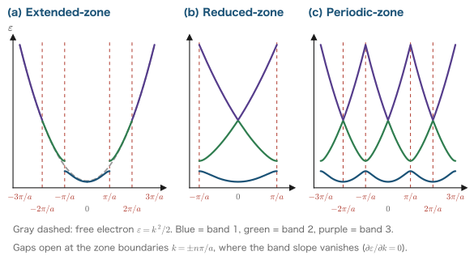
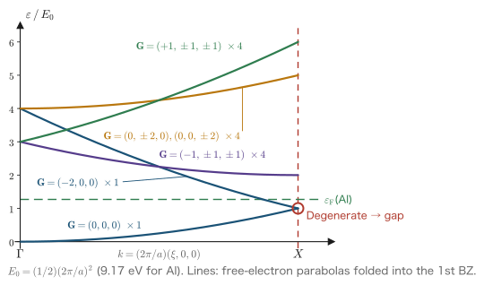
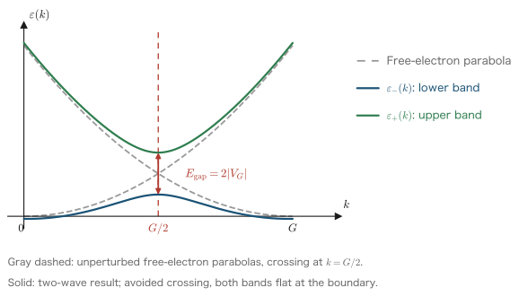
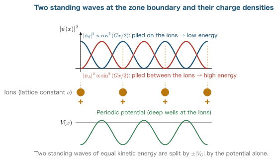

Chapter 12Bloch's Theorem and Band Structure
In Part III we learned that the ground state of a many-electron system can be described as a functional of the electron density (Chapter 9), that the Kohn–Sham equations are the one-electron equations for actually solving that problem (Chapter 10), and how to construct the exchange-correlation functional that appears in them (Chapter 11). With this, the “equation to be solved” is completely fixed. The remaining problem is to solve it for real materials. In Part IV, which begins with this chapter, we treat the first and most important object, the crystal. A crystal is a system in which atoms are arranged periodically in space, and this periodicity translates directly into the periodicity of the Kohn–Sham effective potential, $v_{\mathrm{eff}}(\rr+\bm{R})=v_{\mathrm{eff}}(\rr)$. From this single symmetry alone, a dramatic simplification follows: a problem involving an infinite number of electrons decomposes completely into small eigenvalue problems, one for each of a finite number of wavenumbers $\kk$. This is Bloch's theorem, the starting point of all of solid-state physics. In this chapter we first prepare the language of the reciprocal lattice and the Brillouin zone, and then prove Bloch's theorem by two independent methods. Next, we treat the empty-lattice approximation, in which the periodic potential is ignored completely, and the two-wave approximation for “nearly free electrons,” in which it is corrected to first order in perturbation theory, and we carry the calculation through to the end to see the mechanism by which an energy gap opens at the zone boundary. Finally, we answer the question of why the free-electron model works so well for simple metals, using the orthogonalized-plane-wave method and the Phillips–Kleinman transformation. This is also the seed of the pseudopotential theory of Chapter 15. In this chapter as well we use Hartree atomic units ($\hbar=m_e=e=4\pi\varepsilon_0=1$; see Chapter 1), and in comparisons with experimental values we use the conversion $1\ \mathrm{Hartree}=27.2114\ \mathrm{eV}$.
- Bravais lattices and reciprocal lattices: how the condition $e^{i\bm{G}\cdot\bm{R}}=1$ leads to the primitive reciprocal lattice vectors $\bm{b}_i=2\pi(\bm{a}_j\times\bm{a}_k)/\Omega$, and the Fourier series expansion of periodic functions
- Discretization of the wavenumber by the Born–von Kármán boundary condition, $\kk=\sum_i (n_i/N_i)\bm{b}_i$, and why the number of independent $\kk$ points equals the number of cells
- Two proofs of Bloch's theorem: a proof as simultaneous eigenstates of the translation operators, and a constructive proof that builds the “central equation” in Fourier space
- Proof of $\varepsilon_\nu(\kk+\bm{G})=\varepsilon_\nu(\kk)$, the construction of the first Brillouin zone, and the three representations: the extended-zone, reduced-zone, and periodic-zone schemes
- The empty-lattice approximation: folding of the free-electron bands along the $\Gamma\to X$ line of fcc, and counting the degeneracies
- The two-wave approximation: the $2\times2$ secular equation from degenerate perturbation theory, the gap $2\abs{V_{\bm{G}}}$ at the zone boundary, standing waves and the charge density, and the effective mass at the band edge
- The geometry of the Fermi sphere and the Brillouin zone, the pseudogap, and the derivation of the Hume-Rothery rule ($e/a=1.36,\,1.48,\ldots$)
- The orthogonalized-plane-wave (OPW) method and the Phillips–Kleinman transformation: the repulsive potential $\hat V_R=\sum_c(\varepsilon_v-\varepsilon_c)|\phi_c\rangle\langle\phi_c|$ and the cancellation theorem
12.1 Crystal Periodicity and the Reciprocal Lattice
In this section we build the tools for describing the periodicity of a crystal mathematically. There are two goals. First, to define the reciprocal lattice as the “dual” of a periodic space and to derive the explicit form of its primitive vectors. Second, to prove, including the formula for the coefficients, that a periodic potential can be expanded in a Fourier series whose wavenumbers are only reciprocal lattice vectors. These become the language of all the discussions that follow.
12.1.1 Bravais lattices and the periodic potential
Definition: Bravais lattice and primitive translation vectors
Choose three linearly independent vectors $\bm{a}_1,\bm{a}_2,\bm{a}_3$ (the primitive translation vectors). For each set of integers $\bm{n}=(n_1,n_2,n_3)$, the set of points given by
$$ \begin{equation} \bm{R}_{\bm{n}} = n_1\bm{a}_1 + n_2\bm{a}_2 + n_3\bm{a}_3 ,\qquad n_i \in \mathbb{Z} \label{eq:12-lattice} \end{equation} $$is called a Bravais lattice. The parallelepiped spanned by $\bm{a}_1,\bm{a}_2,\bm{a}_3$ is called the unit cell, and its volume is given by
$$ \begin{equation} \Omega = \bm{a}_1\cdot(\bm{a}_2\times\bm{a}_3) \label{eq:12-cellvol} \end{equation} $$A crystal is a system in which the arrangement of atoms within the unit cell is repeated in the same way at every point of the lattice. Therefore every one-electron potential $V(\rr)$ of the crystal, beginning with the Kohn–Sham effective potential $v_{\mathrm{eff}}$, satisfies
$$ \begin{equation} V(\rr+\bm{R}_{\bm{n}}) = V(\rr)\qquad\text{(for all lattice vectors }\bm{R}_{\bm{n}}\text{)} \label{eq:12-vper} \end{equation} $$Hereafter we call this the lattice periodicity.
We should note here that Eq. \eqref{eq:12-vper} is not merely an assumption but holds self-consistently. In the Kohn–Sham equations of Chapter 10, $v_{\mathrm{eff}}[n](\rr)=v_{\mathrm{ext}}(\rr)+v_{\mathrm{H}}[n](\rr)+v_{xc}[n](\rr)$. If the arrangement of the nuclei is periodic, the external potential $v_{\mathrm{ext}}$ is periodic; the electron density $n(\rr)$ of the self-consistent solution is then also periodic, and therefore $v_{\mathrm{H}}$ and $v_{xc}$ are periodic as well. The periodicity is not destroyed by running the SCF loop.
Math Note: The scalar triple product and oblique coordinates
Let us confirm two facts that we will use repeatedly below.
(i) Cyclic symmetry of the scalar triple product. For arbitrary vectors $\bm{u},\bm{v},\bm{w}$,
$$ \begin{equation} \bm{u}\cdot(\bm{v}\times\bm{w}) = \bm{v}\cdot(\bm{w}\times\bm{u}) = \bm{w}\cdot(\bm{u}\times\bm{v}) \label{eq:12-triple} \end{equation} $$holds. Indeed, in components $\bm{u}\cdot(\bm{v}\times\bm{w}) = \sum_{ijk}\epsilon_{ijk}u_iv_jw_k$ (where $\epsilon_{ijk}$ is the completely antisymmetric tensor), and since $\epsilon_{ijk}$ is invariant under the cyclic permutation of indices $(i,j,k)\to(j,k,i)$, the value does not change when $u,v,w$ are interchanged cyclically. For the same reason, the sign changes when two of them are exchanged. In particular, if two of them are equal, then $\bm{v}\cdot(\bm{v}\times\bm{w})=0$ (one can equally say that this is because $\bm{v}\times\bm{w}$ is orthogonal to $\bm{v}$).
(ii) Oblique coordinates and the volume element. If $\bm{a}_1,\bm{a}_2,\bm{a}_3$ are linearly independent, any position vector can be written uniquely as
$$ \begin{equation} \rr = \beta_1\bm{a}_1+\beta_2\bm{a}_2+\beta_3\bm{a}_3 \label{eq:12-oblique} \end{equation} $$(the $\beta_i$ are called the fractional coordinates). When we change variables from $(x,y,z)$ to $(\beta_1,\beta_2,\beta_3)$, writing Eq. \eqref{eq:12-oblique} in components gives $\partial x_\mu/\partial\beta_i = (\bm{a}_i)_\mu$, so the Jacobian matrix is exactly the matrix with $\bm{a}_1,\bm{a}_2,\bm{a}_3$ arranged as its columns. Its determinant equals $\bm{a}_1\cdot(\bm{a}_2\times\bm{a}_3)=\Omega$ by definition. Therefore
$$ \begin{equation} \dd^3 r = \Omega\,\dd\beta_1\,\dd\beta_2\,\dd\beta_3 \label{eq:12-jacobian} \end{equation} $$and the interior of the unit cell corresponds to $0\le\beta_i<1$ ($i=1,2,3$). This change of coordinates decomposes an integral over the unit cell into a product of one-dimensional integrals over three independent intervals $[0,1]$, so it plays a decisive role in the proof of orthogonality below.
12.1.2 Definition and construction of the reciprocal lattice
The standard tool for handling periodic functions is the Fourier expansion. In one dimension, a function with period $a$, $f(x+a)=f(x)$, could be expanded as $f(x)=\sum_m f_m e^{2\pi i mx/a}$. We want to construct the three-dimensional counterpart of this. It suffices to ask what is required for a plane wave $e^{i\bm{q}\cdot\rr}$ to have the lattice periodicity.
Since $e^{i\bm{q}\cdot(\rr+\bm{R}_{\bm{n}})} = e^{i\bm{q}\cdot\rr}e^{i\bm{q}\cdot\bm{R}_{\bm{n}}}$, the necessary and sufficient condition for this plane wave to have the lattice periodicity is
$$ \begin{equation} e^{i\bm{q}\cdot\bm{R}_{\bm{n}}} = 1 \qquad \Longleftrightarrow\qquad \bm{q}\cdot\bm{R}_{\bm{n}} = 2\pi\times(\text{integer})\qquad(\text{for all }\bm{n}) \label{eq:12-Gcond} \end{equation} $$The set of all wave vectors satisfying this condition is the reciprocal lattice.
Definition: Reciprocal lattice
The set of wave vectors $\bm{q}$ satisfying condition \eqref{eq:12-Gcond} is called the reciprocal lattice of the Bravais lattice, and its elements are written as reciprocal lattice vectors $\bm{G}$.
The reciprocal lattice has been defined as a set; let us now construct it explicitly. The following theorem gives the answer.
Theorem: Primitive reciprocal lattice vectors
For the primitive translation vectors $\bm{a}_1,\bm{a}_2,\bm{a}_3$, define
$$ \begin{equation} \bm{b}_1 = \frac{2\pi}{\Omega}\,\bm{a}_2\times\bm{a}_3,\qquad \bm{b}_2 = \frac{2\pi}{\Omega}\,\bm{a}_3\times\bm{a}_1,\qquad \bm{b}_3 = \frac{2\pi}{\Omega}\,\bm{a}_1\times\bm{a}_2 \label{eq:12-bdef} \end{equation} $$Then these satisfy
$$ \begin{equation} \bm{b}_i\cdot\bm{a}_j = 2\pi\,\delta_{ij} \label{eq:12-dual} \end{equation} $$and the reciprocal lattice coincides exactly with the set of all
$$ \begin{equation} \bm{G}_{\bm{m}} = m_1\bm{b}_1+m_2\bm{b}_2+m_3\bm{b}_3,\qquad m_i\in\mathbb{Z} \label{eq:12-Gdef} \end{equation} $$That is, the reciprocal lattice is also a Bravais lattice (with the $\bm{b}_i$ as its primitive vectors).
Derivation: The duality relation, Eq. \eqref{eq:12-dual}, and the complete characterization of the reciprocal lattice
Step 1: $\bm{b}_1\cdot\bm{a}_1=2\pi$. Substituting the definition \eqref{eq:12-bdef}, we obtain
$$ \begin{align} \bm{b}_1\cdot\bm{a}_1 &= \frac{2\pi}{\Omega}\,(\bm{a}_2\times\bm{a}_3)\cdot\bm{a}_1 \label{eq:12-d1a}\\ &= \frac{2\pi}{\Omega}\,\bm{a}_1\cdot(\bm{a}_2\times\bm{a}_3) \label{eq:12-d1b}\\ &= \frac{2\pi}{\Omega}\,\Omega = 2\pi . \label{eq:12-d1c} \end{align} $$In Eq. \eqref{eq:12-d1b} we used only the commutativity of the inner product, and in Eq. \eqref{eq:12-d1c} only the definition \eqref{eq:12-cellvol} of the unit cell volume.
Step 2: $\bm{b}_1\cdot\bm{a}_2=\bm{b}_1\cdot\bm{a}_3=0$.
$$ \begin{align} \bm{b}_1\cdot\bm{a}_2 &= \frac{2\pi}{\Omega}\,(\bm{a}_2\times\bm{a}_3)\cdot\bm{a}_2 = 0, \label{eq:12-d2a}\\ \bm{b}_1\cdot\bm{a}_3 &= \frac{2\pi}{\Omega}\,(\bm{a}_2\times\bm{a}_3)\cdot\bm{a}_3 = 0 . \label{eq:12-d2b} \end{align} $$Both follow directly from the definition of the cross product, namely that $\bm{a}_2\times\bm{a}_3$ is orthogonal to both $\bm{a}_2$ and $\bm{a}_3$ (alternatively, from the statement in (i) of the Math Note that a scalar triple product in which two vectors are equal vanishes). For $\bm{b}_2,\bm{b}_3$, Eq. \eqref{eq:12-bdef} has the form in which the three expressions are carried into one another by the cyclic permutation of indices $1\to2\to3\to1$, and $\Omega$ is also invariant under cyclic permutations by Eq. \eqref{eq:12-triple}, so exactly the same calculation can be repeated. This proves Eq. \eqref{eq:12-dual}.
Step 3: The $\bm{b}_i$ are linearly independent. If $x_1\bm{b}_1+x_2\bm{b}_2+x_3\bm{b}_3=\bm{0}$, then taking the inner product of both sides with $\bm{a}_j$ and using Eq. \eqref{eq:12-dual} gives $2\pi x_j=0$, that is, $x_j=0$ ($j=1,2,3$). Therefore $\bm{b}_1,\bm{b}_2,\bm{b}_3$ are linearly independent, and any wave vector can be written uniquely as a linear combination of them.
Step 4: A $\bm{G}$ of the form Eq. \eqref{eq:12-Gdef} satisfies condition \eqref{eq:12-Gcond}.
$$ \begin{align} \bm{G}_{\bm{m}}\cdot\bm{R}_{\bm{n}} &= \Big(\sum_i m_i\bm{b}_i\Big)\cdot\Big(\sum_j n_j\bm{a}_j\Big) = \sum_{i,j} m_i n_j\,(\bm{b}_i\cdot\bm{a}_j) \label{eq:12-d4a}\\ &= \sum_{i,j} m_i n_j\,2\pi\delta_{ij} = 2\pi\,(m_1n_1+m_2n_2+m_3n_3). \label{eq:12-d4b} \end{align} $$Equation \eqref{eq:12-d4a} is the expansion by the bilinearity of the inner product, and Eq. \eqref{eq:12-d4b} is the substitution of the duality relation \eqref{eq:12-dual} together with the contraction of the sum by the Kronecker delta. Since $m_i,n_i$ are all integers, $m_1n_1+m_2n_2+m_3n_3$ is also an integer, so $\bm{G}_{\bm{m}}\cdot\bm{R}_{\bm{n}}$ is indeed an integer multiple of $2\pi$.
Step 5: Conversely, every $\bm{q}$ satisfying condition \eqref{eq:12-Gcond} is of the form Eq. \eqref{eq:12-Gdef}. By Step 3, we can write uniquely $\bm{q}=x_1\bm{b}_1+x_2\bm{b}_2+x_3\bm{b}_3$ (with real numbers $x_i$). Applying Eq. \eqref{eq:12-Gcond} in particular to $\bm{R}_{\bm{n}}=\bm{a}_j$ (that is, $n_j=1$ and the others $0$), we obtain
$$ \begin{equation} \bm{q}\cdot\bm{a}_j = \sum_i x_i\,(\bm{b}_i\cdot\bm{a}_j) = 2\pi x_j = 2\pi\times(\text{integer}) \label{eq:12-d5} \end{equation} $$from which it follows that $x_j$ is an integer. Since the same holds for $j=1,2,3$, $\bm{q}$ has the form Eq. \eqref{eq:12-Gdef}. This proves, in both directions, that “the reciprocal lattice $=$ the set of all integer linear combinations of the $\bm{b}_i$.”
We now have the reciprocal lattice. It is also worth stating here that “the reciprocal lattice of the reciprocal lattice is the original lattice.” Indeed, Eq. \eqref{eq:12-dual} is symmetric in $\bm{a}$ and $\bm{b}$, and if we start from the $\bm{b}_i$ and carry out the same construction as in Eq. \eqref{eq:12-bdef}, the $\bm{a}_i$ are recovered. This duality also appears in the relation for the volume of reciprocal space, which we define next.
Derivation: Volume of the reciprocal unit cell $\Omega_{\mathrm{BZ}}=(2\pi)^3/\Omega$
Let $A$ be the $3\times3$ matrix whose columns are $\bm{a}_1,\bm{a}_2,\bm{a}_3$, and let $B$ be the matrix whose columns are $\bm{b}_1,\bm{b}_2,\bm{b}_3$. The $(i,j)$ component of the matrix $B^{\mathsf{T}}A$ is $\bm{b}_i\cdot\bm{a}_j$, so Eq. \eqref{eq:12-dual} can be written in matrix language as
$$ \begin{equation} B^{\mathsf{T}}A = 2\pi\,I_3 \label{eq:12-BA} \end{equation} $$($I_3$ is the $3\times3$ identity matrix). Taking the determinant of both sides, and using $\det(B^{\mathsf{T}})=\det B$ and $\det(2\pi I_3)=(2\pi)^3$, we obtain
$$ \begin{equation} \det B \cdot \det A = (2\pi)^3 . \label{eq:12-detBA} \end{equation} $$Now the determinant of a matrix whose columns are given vectors equals their scalar triple product, so $\det A=\bm{a}_1\cdot(\bm{a}_2\times\bm{a}_3)=\Omega$ and $\det B=\bm{b}_1\cdot(\bm{b}_2\times\bm{b}_3)\equiv\Omega_{\mathrm{BZ}}$. Therefore
$$ \begin{equation} \Omega_{\mathrm{BZ}} = \frac{(2\pi)^3}{\Omega} \label{eq:12-BZvol} \end{equation} $$follows. This is an inverse proportionality: the larger the unit cell in real space, the smaller the unit cell of the reciprocal lattice.
12.1.3 Fourier series of the periodic potential
Now that we have the reciprocal lattice, we are ready to expand the periodic potential. First we prove the orthogonality of the plane waves used in the expansion.
Derivation: Orthogonality of plane waves on the unit cell
What we want to show is that, for any two reciprocal lattice vectors $\bm{G},\bm{G}'$,
$$ \begin{equation} \frac{1}{\Omega}\int_{\text{unit cell}} e^{i(\bm{G}-\bm{G}')\cdot\rr}\,\dd^3 r = \delta_{\bm{G}\bm{G}'} \label{eq:12-pworth} \end{equation} $$Since $\bm{G}-\bm{G}'$ is also a reciprocal lattice vector, write it as $\bm{G}''=\sum_i m_i''\bm{b}_i$ ($m_i''$ are integers). It suffices to show that the left-hand side equals $1$ only when $\bm{G}''=\bm{0}$, that is, $m_1''=m_2''=m_3''=0$, and equals $0$ otherwise.
Step 1: Change to oblique coordinates. Using Eqs. \eqref{eq:12-oblique} and \eqref{eq:12-jacobian} of the original notes, set $\rr=\sum_i\beta_i\bm{a}_i$ and $\dd^3r=\Omega\,\dd\beta_1\dd\beta_2\dd\beta_3$, and take the region of integration to be $0\le\beta_i<1$. The exponent becomes
$$ \begin{equation} \bm{G}''\cdot\rr = \Big(\sum_i m_i''\bm{b}_i\Big)\cdot\Big(\sum_j\beta_j\bm{a}_j\Big) = \sum_{i,j} m_i''\beta_j\,2\pi\delta_{ij} = 2\pi\big(m_1''\beta_1+m_2''\beta_2+m_3''\beta_3\big) \label{eq:12-Gr} \end{equation} $$Here, too, the only thing we used is the duality relation \eqref{eq:12-dual}.
Step 2: Factorization of the triple integral. Since the exponential function turns a sum into a product,
$$ \begin{align} \frac{1}{\Omega}\int_{\text{cell}} e^{i\bm{G}''\cdot\rr}\dd^3r &= \frac{1}{\Omega}\int_0^1\!\!\int_0^1\!\!\int_0^1 e^{2\pi i(m_1''\beta_1+m_2''\beta_2+m_3''\beta_3)}\,\Omega\,\dd\beta_1\dd\beta_2\dd\beta_3 \label{eq:12-fac1}\\ &= \prod_{i=1}^{3}\left(\int_0^1 e^{2\pi i m_i''\beta_i}\,\dd\beta_i\right). \label{eq:12-fac2} \end{align} $$In \eqref{eq:12-fac1} the factor $\Omega$ cancels, and in \eqref{eq:12-fac2} the integrand has become a product of functions of the individual variables, so the integral separates.
Step 3: Evaluation of the one-dimensional integral. For an integer $m$,
$$ \begin{equation} \int_0^1 e^{2\pi i m\beta}\dd\beta = \begin{cases} \displaystyle\int_0^1 1\,\dd\beta = 1, & m=0,\\[2mm] \displaystyle\left[\frac{e^{2\pi i m\beta}}{2\pi i m}\right]_0^1 = \frac{e^{2\pi i m}-1}{2\pi i m} = \frac{1-1}{2\pi i m}=0, & m\ne 0 . \end{cases} \label{eq:12-1dint} \end{equation} $$We used $e^{2\pi im}=1$ in the case $m\ne0$ because $m$ is an integer. (If $m$ were not an integer, this integral would not be $0$. This is another face of the fact that periodicity is destroyed for wavenumbers other than reciprocal lattice vectors.)
Step 4: Conclusion. The product in \eqref{eq:12-fac2} equals $1\cdot1\cdot1=1$ only when the three integers $m_1'',m_2'',m_3''$ are all $0$; if even one of them is not $0$, that factor becomes $0$ and the whole product becomes $0$. That the $m_i''$ are all $0$ is equivalent to $\bm{G}''=\bm{0}$, that is, $\bm{G}=\bm{G}'$, so \eqref{eq:12-pworth} is proved.
Now that orthogonality is established, we proceed to the Fourier expansion. The set of periodic functions $\{e^{i\bm{G}\cdot\rr}\}$ forms a complete orthonormal set in the space of functions on the unit cell (functions with lattice periodicity). This is the completeness of the one-dimensional Fourier series ($\{e^{2\pi imx/a}\}$ is a complete set for functions of period $a$) used three times, once for each of the three directions. Therefore we can expand as follows.
Definition: Fourier series of the periodic potential and the conventions of this book
A potential with lattice periodicity \eqref{eq:12-vper} is expanded as
$$ \begin{equation} V(\rr) = \sum_{\bm{G}} V_{\bm{G}}\,e^{i\bm{G}\cdot\rr} \label{eq:12-vfourier} \end{equation} $$(the sum runs over all reciprocal lattice vectors). The expansion coefficients are given by
$$ \begin{equation} V_{\bm{G}} = \frac{1}{\Omega}\int_{\text{unit cell}} V(\rr)\,e^{-i\bm{G}\cdot\rr}\,\dd^3 r \label{eq:12-vcoef} \end{equation} $$The convention of this book is that the $2\pi$ is placed on the side of the definition \eqref{eq:12-dual} of the reciprocal lattice vectors, and no factor is put in front of the Fourier transform.
Derivation: The coefficient formula \eqref{eq:12-vcoef}
First, if $V(\rr)$ can be written in the form \eqref{eq:12-vfourier}, it is certainly periodic. Indeed,
$$ \begin{equation} V(\rr+\bm{R}) = \sum_{\bm{G}} V_{\bm{G}}\,e^{i\bm{G}\cdot\rr}\,e^{i\bm{G}\cdot\bm{R}} = \sum_{\bm{G}} V_{\bm{G}}\,e^{i\bm{G}\cdot\rr} = V(\rr) \label{eq:12-vperchk} \end{equation} $$Here we used $e^{i\bm{G}\cdot\bm{R}}=1$, which follows from the definition \eqref{eq:12-Gcond} of the reciprocal lattice. Conversely, the statement of completeness is that a periodic function can be expanded in this form.
To extract the coefficients, multiply both sides of \eqref{eq:12-vfourier} by $e^{-i\bm{G}'\cdot\rr}$, integrate over the unit cell, and divide by $\Omega$:
$$ \begin{align} \frac{1}{\Omega}\int_{\text{cell}} V(\rr)e^{-i\bm{G}'\cdot\rr}\dd^3r &= \frac{1}{\Omega}\int_{\text{cell}} \sum_{\bm{G}} V_{\bm{G}}\,e^{i(\bm{G}-\bm{G}')\cdot\rr}\,\dd^3r \label{eq:12-cf1}\\ &= \sum_{\bm{G}} V_{\bm{G}}\,\left[\frac{1}{\Omega}\int_{\text{cell}} e^{i(\bm{G}-\bm{G}')\cdot\rr}\dd^3r\right] \label{eq:12-cf2}\\ &= \sum_{\bm{G}} V_{\bm{G}}\,\delta_{\bm{G}\bm{G}'} = V_{\bm{G}'} . \label{eq:12-cf3} \end{align} $$Eq. \eqref{eq:12-cf1} is the substitution of \eqref{eq:12-vfourier}, \eqref{eq:12-cf2} is the interchange of the sum and the integral (assuming uniform convergence), and \eqref{eq:12-cf3} is the application of the orthogonality \eqref{eq:12-pworth} and the contraction of the sum by the Kronecker delta. Rewriting $\bm{G}'$ as $\bm{G}$ gives \eqref{eq:12-vcoef}.
Physical Meaning: The information carried by $V_{\bm{G}}$
$V_{\bm{G}}$ expresses “how much of the periodic component with lattice-plane spacing $2\pi/\abs{\bm{G}}$ the potential contains.” In particular, it is good to remember the following two points.
- $V_{\bm{0}}$ is the average value. Setting $\bm{G}=\bm{0}$ in \eqref{eq:12-vcoef} gives $V_{\bm{0}}=\frac{1}{\Omega}\int_{\text{cell}}V\dd^3r$, which is the average of the potential within the unit cell. This merely fixes the origin of energy, so below we choose $V_{\bm{0}}=0$ whenever necessary.
- Reality and symmetry. If $V(\rr)$ is real, taking the complex conjugate of \eqref{eq:12-vcoef} gives $V_{\bm{G}}^{*}=V_{-\bm{G}}$. Furthermore, if the crystal has inversion symmetry and the origin is taken at the center of inversion, then $V(-\rr)=V(\rr)$, so replacing $\rr\to-\rr$ in \eqref{eq:12-vcoef} gives $V_{-\bm{G}}=V_{\bm{G}}$; combined with the previous result, $V_{\bm{G}}$ is real. Simple metals such as fcc and bcc fall under this case, and we use this property in Section 12.6.
Example: Fourier components of a lattice of point ions
Consider a system in which an ion producing a charge $-Z_{\mathrm{ion}}$ (a bare ion of valence $Z_{\mathrm{ion}}$) is placed at each lattice point. The potential felt by an electron is $V(\rr)=\sum_{\bm{R}}v(\rr-\bm{R})$ with $v(r)=-Z_{\mathrm{ion}}/r$. Let us compute the Fourier components.
$$ \begin{align} V_{\bm{G}} &= \frac{1}{\Omega}\int_{\text{cell}}\sum_{\bm{R}} v(\rr-\bm{R})\,e^{-i\bm{G}\cdot\rr}\,\dd^3 r \label{eq:12-ion1}\\ &= \frac{1}{\Omega}\sum_{\bm{R}}\int_{\text{cell}} v(\bm{s})\,e^{-i\bm{G}\cdot(\bm{s}+\bm{R})}\,\dd^3 s \label{eq:12-ion2}\\ &= \frac{1}{\Omega}\sum_{\bm{R}}\int_{\text{cell}-\bm{R}} v(\bm{s})\,e^{-i\bm{G}\cdot\bm{s}}\,\dd^3 s \label{eq:12-ion3}\\ &= \frac{1}{\Omega}\int_{\text{all space}} v(\bm{s})\,e^{-i\bm{G}\cdot\bm{s}}\,\dd^3 s . \label{eq:12-ion4} \end{align} $$In \eqref{eq:12-ion2} we made the change of variables $\bm{s}=\rr-\bm{R}$ (the region of integration becomes “the region obtained by translating the unit cell by $-\bm{R}$”). In \eqref{eq:12-ion3} we used $e^{-i\bm{G}\cdot\bm{R}}=1$ (the definition of the reciprocal lattice) to drop $\bm{R}$ from the exponent. In \eqref{eq:12-ion4} we used the fact that summing the translated unit cells over $\bm{R}$ covers all of space without gaps. The remaining integral is the Fourier transform of the Coulomb potential, and as computed in Chapter 8,
$$ \begin{equation} \int \frac{e^{-i\bm{G}\cdot\bm{s}}}{s}\,\dd^3 s = \frac{4\pi}{G^2} \label{eq:12-coulft} \end{equation} $$(the standard calculation: insert a convergence factor $e^{-\mu s}$, perform the angular integration, and then let $\mu\to0$). Therefore
$$ \begin{equation} V_{\bm{G}} = -\frac{4\pi Z_{\mathrm{ion}}}{\Omega\,G^{2}}\qquad(\bm{G}\ne\bm{0}) \label{eq:12-ionVG} \end{equation} $$holds. $V_{\bm{G}}$ is negative, and it becomes smaller as $G$ grows. This sign will matter when we discuss the charge distribution of the standing waves in Section 12.6. As a numerical example, take Al (fcc, lattice constant $a=4.05\,\text{Å}=7.653\,a_0$, primitive cell volume $\Omega=a^3/4=112.1\,a_0^3$, $Z_{\mathrm{ion}}=3$) and $\bm{G}=(2\pi/a)(2,0,0)$. Then $G=4\pi/a=1.642\,a_0^{-1}$ and $G^2=2.696$, so
$$ \begin{equation} V_{(200)} = -\frac{4\pi\times3}{112.1\times2.696} = -0.125\ \mathrm{Hartree} = -3.40\ \mathrm{eV} \label{eq:12-alVG} \end{equation} $$As we will see in Section 12.6, the effective value of Al that can be read off from experiment is only $\abs{V_{(200)}}\simeq0.84$ eV. Where this discrepancy (a reduction by a factor of about four) comes from is the subject of Section 12.8.
To summarize what we have obtained in this section: (i) the reciprocal lattice is uniquely determined by the condition $e^{i\bm{G}\cdot\bm{R}}=1$ alone, and its primitive vectors can be constructed concretely by \eqref{eq:12-bdef}; (ii) a periodic potential can be expanded in the Fourier series \eqref{eq:12-vfourier}, whose wavenumbers are reciprocal lattice vectors only, and the coefficients are given by \eqref{eq:12-vcoef}. In the next section, as another preparation, we introduce the boundary condition that allows us to treat an infinitely large crystal as a finite system.
12.2 Born–von Kármán Boundary Conditions
In principle, a crystal is infinitely large. If we treat an infinite system as it is, technical difficulties arise: the wave functions cannot be normalized, and the number of states cannot be counted. We therefore consider a crystal of finite size and impose periodic boundary conditions in order to eliminate the effects of its surfaces. This is exactly the same idea as imposing periodic boundary conditions on a box for the free-electron gas in Chapter 3. The goal of this section is to determine exactly how these boundary conditions discretize the wavenumber $\kk$, and how many independent $\kk$ points there are.
Definition: Born–von Kármán (BvK) boundary conditions
Suppose the crystal is a finite block consisting of $N_1,N_2,N_3$ unit cells along the directions of $\bm{a}_1,\bm{a}_2,\bm{a}_3$, respectively (total number of cells $N=N_1N_2N_3$, total volume $V=N\Omega$). Identify opposite ends of the block with each other, and require that every one-electron wave function satisfy
$$ \begin{equation} \psi(\rr+N_i\bm{a}_i) = \psi(\rr)\qquad (i=1,2,3) \label{eq:12-bvk} \end{equation} $$This is called the Born–von Kármán periodic boundary conditions. In one dimension, it corresponds to “joining the right and left ends of the chain to form a ring.” At the end, we take the limit $N_i\to\infty$ (the thermodynamic limit).
Let us see what this condition imposes on the wavenumber. To the normalized plane wave
$$ \begin{equation} \varphi_{\kk}(\rr) = \frac{1}{\sqrt{N\Omega}}\,e^{i\kk\cdot\rr} \label{eq:12-pw} \end{equation} $$we impose Eq. \eqref{eq:12-bvk} (the normalization factor is fixed by $\int_{V}\abs{\varphi_{\kk}}^2\dd^3r = \frac{1}{N\Omega}\cdot N\Omega = 1$).
Derivation: Discretization of $\kk$ by the BvK condition
Step 1: Phase condition. Substituting Eq. \eqref{eq:12-pw} into Eq. \eqref{eq:12-bvk} gives
$$ \begin{equation} \frac{1}{\sqrt{N\Omega}}e^{i\kk\cdot\rr}\,e^{i\kk\cdot(N_i\bm{a}_i)} = \frac{1}{\sqrt{N\Omega}}e^{i\kk\cdot\rr} \quad\Longrightarrow\quad e^{iN_i\,\kk\cdot\bm{a}_i}=1 \label{eq:12-bvk1} \end{equation} $$that is,
$$ \begin{equation} N_i\,\kk\cdot\bm{a}_i = 2\pi n_i,\qquad n_i\in\mathbb{Z}\qquad(i=1,2,3). \label{eq:12-bvk2} \end{equation} $$Step 2: Expansion in the reciprocal-lattice basis. Since $\bm{b}_1,\bm{b}_2,\bm{b}_3$ are linearly independent (Step 3 of Section 12.1), any wavenumber can be written uniquely (with real numbers $\alpha_i$) as
$$ \begin{equation} \kk = \alpha_1\bm{b}_1+\alpha_2\bm{b}_2+\alpha_3\bm{b}_3 \label{eq:12-kexp} \end{equation} $$By the duality relation \eqref{eq:12-dual}, $\kk\cdot\bm{a}_i = \sum_j\alpha_j(\bm{b}_j\cdot\bm{a}_i)=2\pi\alpha_i$, so Eq. \eqref{eq:12-bvk2} becomes
$$ \begin{equation} N_i\cdot 2\pi\alpha_i = 2\pi n_i\quad\Longrightarrow\quad \alpha_i = \frac{n_i}{N_i} \label{eq:12-alpha} \end{equation} $$Therefore the allowed wavenumbers
$$ \begin{equation} \kk = \frac{n_1}{N_1}\bm{b}_1+\frac{n_2}{N_2}\bm{b}_2+\frac{n_3}{N_3}\bm{b}_3,\qquad n_i\in\mathbb{Z} \label{eq:12-kdiscrete} \end{equation} $$form a discrete lattice. It is a fine lattice obtained by dividing the primitive reciprocal lattice vectors into $N_i$ equal parts.
Step 3: Number of independent $\kk$ points. Since $n_i$ runs over all integers, there are infinitely many $\kk$ in Eq. \eqref{eq:12-kdiscrete}. However, replacing $n_i\to n_i+N_i$ gives $\kk\to\kk+\bm{b}_i$, and $\bm{b}_i$ is a reciprocal lattice vector. As we will see later in Section 12.4, $\kk$ and $\kk+\bm{G}$ describe exactly the same physical state (the difference is merely a relabeling). Therefore the independent values are limited to the range
$$ \begin{equation} n_i = 0,1,2,\ldots,N_i-1\qquad(i=1,2,3) \label{eq:12-nrange} \end{equation} $$and their total number is
$$ \begin{equation} N_1\times N_2\times N_3 = N = (\text{number of unit cells in the crystal}) \label{eq:12-kcount} \end{equation} $$The number of independent $\kk$ points is exactly equal to the number of unit cells.
Physical Meaning: What the counting of $\kk$ points implies
The result “the number of independent $\kk$ $=$ the number of cells $N$” is the basis for counting states. One band (one band index $\nu$) has one state at each of the $N$ $\kk$ points in the first Brillouin zone, so it accommodates $2N$ one-electron states including spin. Per unit cell, one band accommodates two electrons, including spin. This is the basis of the well-known criterion that “a crystal with an odd number of valence electrons per unit cell must be a metal” (with an even number it can be an insulator, but if the bands overlap it can also be a metal).
Furthermore, from Eqs. \eqref{eq:12-BZvol} and \eqref{eq:12-kcount}, the volume occupied by one $\kk$ point in reciprocal space is
$$ \begin{equation} \Delta\Omega_{\kk} = \frac{\Omega_{\mathrm{BZ}}}{N} = \frac{(2\pi)^3}{N\Omega} = \frac{(2\pi)^3}{V} \label{eq:12-dk} \end{equation} $$This is exactly the same as the result we obtained in Chapter 3 when we imposed periodic boundary conditions on the free-electron gas. Whether or not a periodic potential is present, the “density of states” in $\kk$ space is determined solely by the volume $V$ of the crystal. Therefore, in the thermodynamic limit $N\to\infty$, the rule for replacing a sum over $\kk$ by an integral
$$ \begin{equation} \sum_{\kk} \;\longrightarrow\; \frac{V}{(2\pi)^3}\int_{\mathrm{BZ}}\dd^3 k \label{eq:12-sum2int} \end{equation} $$can be used as it is. The “$\kk$-point sampling” performed in actual numerical calculations is the technique of approximating this integral by a weighted sum over a finite number of points (its convergence, and its relation to smearing, which softens the sharpness of the Fermi surface, are discussed in Section 14.5.5 and Section 14.7 of Chapter 14).
Example: How large is $N$?
Consider an Al single crystal $1$ mm on a side. Since the lattice constant is $a=4.05$ Å, the number of primitive cells along an edge is $N_1\simeq 10^{-3}/(2.86\times10^{-10})\simeq 3.5\times10^{6}$, and the total number of cells is of order $N\simeq4\times10^{19}$. The spacing of the $\kk$ points is $2\pi/(N_1 a)\simeq 2\times10^{-6}\ \text{Å}^{-1}$, which is completely negligible compared with the size of the Brillouin zone ($\sim1\ \text{Å}^{-1}$). This is the quantitative basis for “treating $\kk$ as a continuous variable.” Conversely, in nanostructures (for example, clusters of a few tens of atoms or thin nanowires), $N$ is small, and the discreteness of $\kk$ itself shows up in the physical properties (quantum confinement).
With this, the stage is set. We now know the representation of the periodic potential (Section 12.1) and the set of allowed wavenumbers (Section 12.2). In the next section, we use them to prove Bloch's theorem.
12.3 Bloch's Theorem: Two Proofs
We now come to the central proposition of this chapter. What we must solve is the one-electron Schrödinger equation (the Kohn–Sham equation) in a periodic potential,
$$ \begin{equation} \hat H\psi(\rr) = \left[-\frac{1}{2}\nabla^2 + V(\rr)\right]\psi(\rr) = \varepsilon\,\psi(\rr), \qquad V(\rr+\bm{R})=V(\rr) \label{eq:12-se} \end{equation} $$This problem involves infinitely many atoms and looks hopeless if viewed naively. Bloch's theorem, however, tells us that from a single symmetry, namely periodicity, the problem decomposes completely into independent small problems, one for each wavenumber $\kk$. Here we prove the same theorem in two ways. The first proof is abstract and based on symmetry (simultaneous eigenstates of the translation operators); the second is constructive and actually writes down the equations in Fourier space. The former tells us “why it happens,” and the latter tells us “how to actually solve the problem.” It is important to know both.
Theorem: Bloch's theorem
The eigenfunctions of the Hamiltonian \eqref{eq:12-se} with lattice periodicity $V(\rr+\bm{R})=V(\rr)$ can be labeled by a real vector $\kk$ and chosen so that
$$ \begin{equation} \psi_{\kk}(\rr+\bm{R}) = e^{i\kk\cdot\bm{R}}\,\psi_{\kk}(\rr) \qquad\text{(for all lattice vectors }\bm{R}\text{)} \label{eq:12-bloch1} \end{equation} $$holds. Equivalently, this can be written as
$$ \begin{equation} \psi_{\kk}(\rr) = e^{i\kk\cdot\rr}\,u_{\kk}(\rr),\qquad u_{\kk}(\rr+\bm{R}) = u_{\kk}(\rr) \label{eq:12-bloch2} \end{equation} $$That is, a Bloch function has the form “plane wave $\times$ lattice-periodic function.”
12.3.1 Proof 1: As simultaneous eigenstates of the translation operators
We first state the strategy. If there is a symmetry operation that commutes with the Hamiltonian, we can take simultaneous eigenstates of the two. The symmetry operation here is “translation by a lattice vector.” We therefore first define the translation as an operator, and check that it commutes with the Hamiltonian, that translations commute with one another, and that they are unitary. It then follows from the group structure alone that the form of the eigenvalue is restricted to $e^{i\kk\cdot\bm{R}}$.
Definition: Translation operator
For a lattice vector $\bm{R}$, we define the translation operator $\hat T_{\bm{R}}$ acting on functions by
$$ \begin{equation} \big(\hat T_{\bm{R}}f\big)(\rr) \equiv f(\rr+\bm{R}) \label{eq:12-Tdef} \end{equation} $$(we adopt the convention that the argument is shifted by $\bm{R}$).
Derivation: The three properties of the translation operator
(i) They form a group: $\hat T_{\bm{R}}\hat T_{\bm{R}'} = \hat T_{\bm{R}+\bm{R}'}$. We only need to use the definition twice. First, the inner action produces a new function $g$, namely $\big(\hat T_{\bm{R}'}f\big)(\rr)=f(\rr+\bm{R}')$. Acting on it with $\hat T_{\bm{R}}$ gives
$$ \begin{equation} \big(\hat T_{\bm{R}}\,\hat T_{\bm{R}'}f\big)(\rr) = g(\rr+\bm{R}) = f\big((\rr+\bm{R})+\bm{R}'\big) = f\big(\rr+(\bm{R}+\bm{R}')\big) = \big(\hat T_{\bm{R}+\bm{R}'}f\big)(\rr). \label{eq:12-Tgroup} \end{equation} $$In particular, since $\bm{R}+\bm{R}'=\bm{R}'+\bm{R}$, we have $\hat T_{\bm{R}}\hat T_{\bm{R}'}=\hat T_{\bm{R}'}\hat T_{\bm{R}}$; that is, the translation operators all commute with one another (they form a commutative group, i.e., an Abelian group).
(ii) They are unitary. For any two functions, taking the inner product over the BvK region $V$ gives
$$ \begin{align} \big\langle \hat T_{\bm{R}}f \,\big|\, \hat T_{\bm{R}}g \big\rangle &= \int_V f^{*}(\rr+\bm{R})\,g(\rr+\bm{R})\,\dd^3 r \label{eq:12-Tu1}\\ &= \int_V f^{*}(\rr')\,g(\rr')\,\dd^3 r' = \braket{f|g}. \label{eq:12-Tu2} \end{align} $$In Eq. \eqref{eq:12-Tu2} we made the change of variables $\rr'=\rr+\bm{R}$. The Jacobian is $1$, and thanks to the BvK boundary condition the integration region is mapped onto the same $V$ also in terms of $\rr'$ (whatever sticks out past one edge comes back in from the opposite side). Since $\hat T_{\bm{R}}$ is a bijective linear map that preserves the inner product, it is unitary: $\hat T_{\bm{R}}^{\dagger}\hat T_{\bm{R}}=\hat 1$, that is, $\hat T_{\bm{R}}^{-1}=\hat T_{\bm{R}}^{\dagger}=\hat T_{-\bm{R}}$.
(iii) They commute with the Hamiltonian: $[\hat T_{\bm{R}},\hat H]=0$. We check the kinetic term and the potential term separately. For the kinetic term, differentiation with respect to $\rr$ and differentiation with respect to $\rr+\bm{R}$ are the same operation (because $\bm{R}$ is a constant vector), so
$$ \begin{equation} \Big(\hat T_{\bm{R}}\big(-\tfrac{1}{2}\nabla^2\psi\big)\Big)(\rr) = -\tfrac{1}{2}(\nabla^2\psi)(\rr+\bm{R}) = -\tfrac{1}{2}\nabla_{\rr}^2\,\psi(\rr+\bm{R}) = \Big(-\tfrac{1}{2}\nabla^2\big(\hat T_{\bm{R}}\psi\big)\Big)(\rr). \label{eq:12-Tkin} \end{equation} $$The middle equality is the key point: since $\partial/\partial\rr = \partial/\partial(\rr+\bm{R})$, “differentiate and then shift” and “shift and then differentiate” give the same result. For the potential term,
$$ \begin{equation} \Big(\hat T_{\bm{R}}\big(V\psi\big)\Big)(\rr) = V(\rr+\bm{R})\,\psi(\rr+\bm{R}) \;\overset{\text{periodicity}}{=}\; V(\rr)\,\psi(\rr+\bm{R}) = \Big(V\cdot\big(\hat T_{\bm{R}}\psi\big)\Big)(\rr). \label{eq:12-Tpot} \end{equation} $$Here, for the first time, we used the lattice periodicity \eqref{eq:12-vper}. For a potential that is not periodic this equality does not hold, and the whole argument below collapses. Combining the two terms, we have shown $[\hat T_{\bm{R}},\hat H]=0$.
By properties (i) and (iii), $\hat H$ and all the $\hat T_{\bm{R}}$ form a set of mutually commuting operators. By the general theory of linear algebra, a family of commuting operators can be diagonalized simultaneously. That is, we can choose the eigenfunctions of $\hat H$ so that they are at the same time eigenfunctions of all the $\hat T_{\bm{R}}$:
$$ \begin{equation} \hat H\psi = \varepsilon\psi,\qquad \hat T_{\bm{R}}\,\psi = c(\bm{R})\,\psi \quad(\text{for all }\bm{R}). \label{eq:12-simul} \end{equation} $$Derivation: The eigenvalue $c(\bm{R})$ must have the form $e^{i\kk\cdot\bm{R}}$
Step 1: Multiplicativity. We apply Eq. \eqref{eq:12-Tgroup} to the eigenstate $\psi$. Computing in order from the left-hand side,
$$ \begin{equation} \hat T_{\bm{R}}\hat T_{\bm{R}'}\psi = \hat T_{\bm{R}}\big(c(\bm{R}')\psi\big) = c(\bm{R}')c(\bm{R})\,\psi, \qquad \hat T_{\bm{R}+\bm{R}'}\psi = c(\bm{R}+\bm{R}')\,\psi . \label{eq:12-cmult1} \end{equation} $$The two are equal (because $\psi\ne0$), so
$$ \begin{equation} c(\bm{R})\,c(\bm{R}') = c(\bm{R}+\bm{R}'). \label{eq:12-cmult} \end{equation} $$Step 2: The absolute value is $1$. Since $\hat T_{\bm{R}}$ is unitary, setting $f=g=\psi$ in Eq. \eqref{eq:12-Tu2} gives
$$ \begin{equation} \braket{\psi|\psi} = \big\langle \hat T_{\bm{R}}\psi\big|\hat T_{\bm{R}}\psi\big\rangle = \abs{c(\bm{R})}^2\braket{\psi|\psi} \quad\Longrightarrow\quad \abs{c(\bm{R})}=1 . \label{eq:12-cabs} \end{equation} $$Therefore $c(\bm{R})$ is a complex number of absolute value $1$, and can be written as $c(\bm{R})=e^{i\theta(\bm{R})}$ using a real number $\theta(\bm{R})$.
Step 3: Everything is determined by the values for the primitive translations. Let the eigenvalues for the primitive translation vectors be $c(\bm{a}_i)=e^{i\theta_i}$ ($\theta_i$ real). For a general lattice vector $\bm{R}=n_1\bm{a}_1+n_2\bm{a}_2+n_3\bm{a}_3$, using Eq. \eqref{eq:12-cmult} repeatedly we obtain
$$ \begin{equation} c(\bm{R}) = c(\bm{a}_1)^{n_1}c(\bm{a}_2)^{n_2}c(\bm{a}_3)^{n_3} = e^{i(n_1\theta_1+n_2\theta_2+n_3\theta_3)} . \label{eq:12-cR} \end{equation} $$(For negative $n_i$ we use $c(-\bm{a}_i)=c(\bm{a}_i)^{-1}$. This follows by setting $\bm{R}'=-\bm{R}$ and $c(\bm{0})=1$ in Eq. \eqref{eq:12-cmult}.)
Step 4: Introducing $\kk$. We now define the real vector $\kk$ by
$$ \begin{equation} \kk \equiv \frac{\theta_1}{2\pi}\bm{b}_1 + \frac{\theta_2}{2\pi}\bm{b}_2 + \frac{\theta_3}{2\pi}\bm{b}_3 \label{eq:12-kdefine} \end{equation} $$Since the $\bm{b}_i$ are linearly independent, this is a consistent definition, and by the duality relation \eqref{eq:12-dual} we have $\kk\cdot\bm{a}_i = \theta_i$. Then
$$ \begin{equation} \kk\cdot\bm{R} = \sum_i n_i\,(\kk\cdot\bm{a}_i) = n_1\theta_1+n_2\theta_2+n_3\theta_3 \label{eq:12-kR} \end{equation} $$so Eq. \eqref{eq:12-cR} is precisely $c(\bm{R})=e^{i\kk\cdot\bm{R}}$. Together with Eq. \eqref{eq:12-simul}, this proves Eq. \eqref{eq:12-bloch1}. The vector $\kk$ is “the phase of the eigenvalue of the translation operator,” nothing more and nothing less.
Step 5: Periodicity of $u_{\kk}$. We define $u_{\kk}(\rr)\equiv e^{-i\kk\cdot\rr}\psi_{\kk}(\rr)$ and check that it is periodic:
$$ \begin{align} u_{\kk}(\rr+\bm{R}) &= e^{-i\kk\cdot(\rr+\bm{R})}\,\psi_{\kk}(\rr+\bm{R}) \label{eq:12-u1}\\ &= e^{-i\kk\cdot\rr}\,e^{-i\kk\cdot\bm{R}}\cdot e^{i\kk\cdot\bm{R}}\psi_{\kk}(\rr) \label{eq:12-u2}\\ &= e^{-i\kk\cdot\rr}\psi_{\kk}(\rr) = u_{\kk}(\rr). \label{eq:12-u3} \end{align} $$In Eq. \eqref{eq:12-u2} we substituted Eq. \eqref{eq:12-bloch1}, and in Eq. \eqref{eq:12-u3} we used $e^{-i\kk\cdot\bm{R}}e^{i\kk\cdot\bm{R}}=1$. Hence $\psi_{\kk}=e^{i\kk\cdot\rr}u_{\kk}$, which proves Eq. \eqref{eq:12-bloch2}. Conversely, that a function of the form \eqref{eq:12-bloch2} satisfies Eq. \eqref{eq:12-bloch1} follows by tracing the same calculation backward.
Finally, imposing the BvK boundary condition \eqref{eq:12-bvk} discretizes $\kk$. Indeed, $\psi_{\kk}(\rr+N_i\bm{a}_i)=e^{i\kk\cdot N_i\bm{a}_i}\psi_{\kk}(\rr)$ must equal $\psi_{\kk}(\rr)$, so $e^{iN_i\kk\cdot\bm{a}_i}=1$. This is exactly the same condition as Eq. \eqref{eq:12-bvk1}, and the allowed $\kk$ are limited to the $N$ values of Eq. \eqref{eq:12-kdiscrete} (and those that differ from them by a reciprocal lattice vector).
12.3.2 Proof 2: Constructive proof in Fourier space and the central equation
The first proof is beautiful, but it does not tell us “how to actually compute.” The second proof makes up for that. The strategy is to expand the wave function in plane waves, rewrite the Schrödinger equation as simultaneous equations for the expansion coefficients, and see that these simultaneous equations are block-diagonalized into blocks, one for each set of $\kk$ and $\kk+\bm{G}$.
As preparation, we first confirm the orthogonality of plane waves over the whole BvK region ($V=N\Omega$). It suffices to carry out the same calculation as in Eq. \eqref{eq:12-pworth} of Section 12.1, but over the supercell instead of the unit cell.
Derivation: Orthonormality of plane waves in the BvK domain
We show that, for two wavenumbers $\kk,\kk'$ allowed by Eq. \eqref{eq:12-kdiscrete},
$$ \begin{equation} \int_{V}\varphi_{\kk'}^{*}(\rr)\,\varphi_{\kk}(\rr)\,\dd^3 r = \frac{1}{N\Omega}\int_V e^{i(\kk-\kk')\cdot\rr}\,\dd^3 r = \delta_{\kk\kk'} \label{eq:12-pworth2} \end{equation} $$holds. We can write $\kk-\kk'=\sum_i\frac{\Delta n_i}{N_i}\bm{b}_i$ ($\Delta n_i$ are integers). Introducing fractional coordinates adapted to the supercell, $\rr = \gamma_1(N_1\bm{a}_1)+\gamma_2(N_2\bm{a}_2)+\gamma_3(N_3\bm{a}_3)$ ($0\le\gamma_i<1$), the Jacobian is $\det[N_1\bm{a}_1,N_2\bm{a}_2,N_3\bm{a}_3]=N_1N_2N_3\,\Omega=N\Omega$. Since $\bm{b}_i\cdot\bm{a}_j=2\pi\delta_{ij}$, the exponent becomes
$$ \begin{equation} (\kk-\kk')\cdot\rr = \sum_{i,j}\frac{\Delta n_i}{N_i}\,\gamma_j N_j\,(\bm{b}_i\cdot\bm{a}_j) = 2\pi\sum_i \Delta n_i\,\gamma_i \label{eq:12-kkr} \end{equation} $$(the point is that $N_i$ cancels). Therefore
$$ \begin{equation} \frac{1}{N\Omega}\int_V e^{i(\kk-\kk')\cdot\rr}\dd^3r = \prod_{i=1}^{3}\int_0^1 e^{2\pi i\,\Delta n_i\,\gamma_i}\,\dd\gamma_i = \prod_{i=1}^{3}\delta_{\Delta n_i,0} \label{eq:12-pworth3} \end{equation} $$(the last step is the same one-dimensional integral as in Eq. \eqref{eq:12-1dint}). Since all $\Delta n_i$ being $0$ is equivalent to $\kk=\kk'$, Eq. \eqref{eq:12-pworth2} is proved. Note here that the case in which “$\kk$ and $\kk'$ differ by a reciprocal lattice vector” ($\Delta n_i$ is a multiple of $N_i$) is the case in which $\kk$ and $\kk'$ give the identical plane wave, and so it does not contradict the criterion above.
Derivation: The central equation
Step 1: Plane-wave expansion. Since the complete set of functions satisfying the BvK boundary conditions is $\{\varphi_{\bm{q}}\}$ (over all allowed wavenumbers $\bm{q}$), we expand the eigenfunction as
$$ \begin{equation} \psi(\rr) = \sum_{\bm{q}} c_{\bm{q}}\,\varphi_{\bm{q}}(\rr) = \frac{1}{\sqrt{N\Omega}}\sum_{\bm{q}} c_{\bm{q}}\,e^{i\bm{q}\cdot\rr} \label{eq:12-psiexp} \end{equation} $$Here $\bm{q}$ runs over all the discrete points of Eq. \eqref{eq:12-kdiscrete} (not only those in the first zone, but also those displaced by reciprocal lattice vectors).
Step 2: The kinetic-energy term. A plane wave is an eigenfunction of the kinetic-energy operator:
$$ \begin{equation} -\frac{1}{2}\nabla^2 e^{i\bm{q}\cdot\rr} = -\frac{1}{2}(i\bm{q})\cdot(i\bm{q})\,e^{i\bm{q}\cdot\rr} = \frac{1}{2}q^2\,e^{i\bm{q}\cdot\rr}. \label{eq:12-kinpw} \end{equation} $$Step 3: The potential term—this is the decisive step. Multiplying by the Fourier series of the periodic potential, Eq. \eqref{eq:12-vfourier}, we obtain
$$ \begin{align} V(\rr)\,e^{i\bm{q}\cdot\rr} &= \left(\sum_{\bm{G}}V_{\bm{G}}e^{i\bm{G}\cdot\rr}\right)e^{i\bm{q}\cdot\rr} \label{eq:12-vpsi1}\\ &= \sum_{\bm{G}} V_{\bm{G}}\,e^{i(\bm{q}+\bm{G})\cdot\rr}. \label{eq:12-vpsi2} \end{align} $$A periodic potential can change the momentum of a plane wave only by a reciprocal lattice vector. This is the whole physics of periodic systems. If the potential were not periodic, its Fourier transform would have components at every wavenumber, and $\bm{q}$ would mix with all wavenumbers.
Step 4: Substitution into the Schrödinger equation. Putting Eq. \eqref{eq:12-psiexp} into Eq. \eqref{eq:12-se} and canceling $\sqrt{N\Omega}$, we obtain
$$ \begin{equation} \sum_{\bm{q}}\frac{1}{2}q^2 c_{\bm{q}}e^{i\bm{q}\cdot\rr} + \sum_{\bm{q}}\sum_{\bm{G}} V_{\bm{G}}\,c_{\bm{q}}\,e^{i(\bm{q}+\bm{G})\cdot\rr} = \varepsilon\sum_{\bm{q}} c_{\bm{q}}\,e^{i\bm{q}\cdot\rr}. \label{eq:12-se1} \end{equation} $$Step 5: Relabeling of indices in the second term. In the second term, let $\bm{q}''=\bm{q}+\bm{G}$. When $\bm{q}$ runs over all allowed wavenumbers and $\bm{G}$ runs over the whole reciprocal lattice, $\bm{q}''$ also runs over all allowed wavenumbers (we merely change the order of summation, neither dropping nor adding any terms). Substituting $\bm{q}=\bm{q}''-\bm{G}$, we have
$$ \begin{equation} \sum_{\bm{q}}\sum_{\bm{G}} V_{\bm{G}}\,c_{\bm{q}}\,e^{i(\bm{q}+\bm{G})\cdot\rr} = \sum_{\bm{q}''}\left(\sum_{\bm{G}} V_{\bm{G}}\,c_{\bm{q}''-\bm{G}}\right)e^{i\bm{q}''\cdot\rr}. \label{eq:12-relabel} \end{equation} $$Now every term is a linear combination of $e^{i\bm{q}\cdot\rr}$.
Step 6: Comparing coefficients. Multiplying both sides of Eq. \eqref{eq:12-se1} by $e^{-i\bm{q}'\cdot\rr}$, integrating over $V$, and using the orthogonality \eqref{eq:12-pworth2}, we find, independently for each $\bm{q}$,
$$ \begin{equation} \left(\frac{1}{2}q^2-\varepsilon\right)c_{\bm{q}} + \sum_{\bm{G}} V_{\bm{G}}\,c_{\bm{q}-\bm{G}} = 0 \label{eq:12-central0} \end{equation} $$This is the desired set of simultaneous equations.
Step 7: Discovery of the block structure. Looking closely at Eq. \eqref{eq:12-central0}, the coefficient $c_{\bm{q}}$ is coupled only to $c_{\bm{q}-\bm{G}}$. That is, the set of wavenumbers $\{\kk+\bm{G}\}$ that differ from one another only by reciprocal lattice vectors forms a closed family completely decoupled from all other wavenumbers. Therefore, if we partition the whole set of wavenumbers $\bm{q}$ into these equivalence classes (“the family with $\kk$ as its representative”), Eq. \eqref{eq:12-central0} decomposes into an independent eigenvalue problem for each family. Rewriting $\bm{q}=\kk+\bm{G}$ and writing the summation variable as $\bm{G}'$ instead of $\bm{G}''=\bm{G}'-\bm{G}$ (that is, replacing $\bm{G}\to\bm{G}-\bm{G}'$ in Eq. \eqref{eq:12-central0}), we obtain
$$ \begin{equation} \left(\frac{1}{2}\abs{\kk+\bm{G}}^2-\varepsilon\right)c_{\kk+\bm{G}} + \sum_{\bm{G}'} V_{\bm{G}-\bm{G}'}\,c_{\kk+\bm{G}'} = 0 \label{eq:12-central} \end{equation} $$This is called the central equation.
In the language of matrices, the central equation \eqref{eq:12-central} reads
$$ \begin{equation} \sum_{\bm{G}'} H_{\bm{G}\bm{G}'}(\kk)\,c_{\kk+\bm{G}'} = \varepsilon(\kk)\,c_{\kk+\bm{G}}, \qquad H_{\bm{G}\bm{G}'}(\kk) = \frac{1}{2}\abs{\kk+\bm{G}}^2\delta_{\bm{G}\bm{G}'} + V_{\bm{G}-\bm{G}'} \label{eq:12-hmatrix} \end{equation} $$which is an independent Hermitian eigenvalue problem for each $\kk$ (Hermiticity follows from $V_{\bm{G}-\bm{G}'}^{*}=V_{\bm{G}'-\bm{G}}$). Each time we fix $\kk$, we obtain a sequence of discrete eigenvalues, which we number from the bottom as $\varepsilon_1(\kk)\le\varepsilon_2(\kk)\le\cdots$. This number $\nu$ is called the band index. The plot of $\varepsilon_\nu(\kk)$ as a function of $\kk$ is the band structure.
Bloch's theorem is also immediately reproduced from this form. Indeed, a solution containing only the family $\{\kk+\bm{G}\}$ can be written as
$$ \begin{align} \psi_{\kk}(\rr) &= \frac{1}{\sqrt{N\Omega}}\sum_{\bm{G}}c_{\kk+\bm{G}}\,e^{i(\kk+\bm{G})\cdot\rr} \label{eq:12-blochfromce1}\\ &= e^{i\kk\cdot\rr}\underbrace{\left[\frac{1}{\sqrt{N\Omega}}\sum_{\bm{G}}c_{\kk+\bm{G}}\,e^{i\bm{G}\cdot\rr}\right]}_{\displaystyle \equiv\,u_{\kk}(\rr)} \label{eq:12-blochfromce2} \end{align} $$The content of the square brackets is a Fourier series whose wavenumbers are only reciprocal lattice vectors, so for the same reason as Eq. \eqref{eq:12-vperchk} in Section 12.1 it is a lattice-periodic function. Hence Eq. \eqref{eq:12-bloch2} holds. $\square$
Physical Meaning: Why is $\kk$ a “good quantum number”?
In free space the momentum $\hat{\bm{p}}=-i\nabla$ commutes with the Hamiltonian, and its eigenvalue $\bm{p}=\bm{k}$ is a conserved quantity. In a periodic potential this no longer holds ($[\hat{\bm{p}},V(\rr)]\ne0$). However, the discrete translations $\hat T_{\bm{R}}$ still commute with $\hat H$. The quantity $\kk$ is the quantum number associated with this discrete translational symmetry, and it is called the crystal momentum. Note that it is not the true momentum. Indeed, as Eq. \eqref{eq:12-blochfromce1} shows, a Bloch state is a superposition of plane waves with momenta $\kk,\kk+\bm{G}_1,\kk+\bm{G}_2,\ldots$, and is not an eigenstate of momentum.
Instead, $\kk$ is a “good quantum number” in the following three senses. (i) The eigenvalue problem decomposes completely for each $\kk$ (the matrix \eqref{eq:12-hmatrix} does not couple different $\kk$), so the problem for an infinite system becomes a problem for a finite matrix. (ii) When a perturbation (lattice vibration, impurity, light) is applied, the transition rules can be written as conservation of $\kk$ (apart from the ambiguity of a reciprocal lattice vector). This is the basis of the momentum-conservation law in X-ray diffraction and of the selection rules for phonon scattering. (iii) The electron density has the lattice periodicity, since $\abs{\psi_{\kk}(\rr+\bm{R})}^2=\abs{e^{i\kk\cdot\bm{R}}}^2\abs{\psi_{\kk}(\rr)}^2=\abs{\psi_{\kk}(\rr)}^2$. A Bloch state is a delocalized state spread uniformly over the whole crystal, and the picture that “an electron belongs to a particular atom” does not hold here.
Math Note: The equation satisfied by $u_{\kk}$ (an alternative formulation)
Substituting Eq. \eqref{eq:12-bloch2} directly into Eq. \eqref{eq:12-se} gives an equation for the periodic function $u_{\kk}$. Using the Leibniz rule twice, we have
$$ \begin{align} \nabla\left(e^{i\kk\cdot\rr}u_{\kk}\right) &= e^{i\kk\cdot\rr}\left(i\kk + \nabla\right)u_{\kk}, \label{eq:12-uk1}\\ \nabla^2\left(e^{i\kk\cdot\rr}u_{\kk}\right) &= e^{i\kk\cdot\rr}\left(i\kk+\nabla\right)^2 u_{\kk} = e^{i\kk\cdot\rr}\left(-k^2 + 2i\kk\cdot\nabla + \nabla^2\right)u_{\kk} \label{eq:12-uk2} \end{align} $$(in Eq. \eqref{eq:12-uk1} we used $\nabla e^{i\kk\cdot\rr}=i\kk e^{i\kk\cdot\rr}$, and in Eq. \eqref{eq:12-uk2} we repeated the same operation). Substituting this into Eq. \eqref{eq:12-se} and dropping the common factor $e^{i\kk\cdot\rr}$, we obtain
$$ \begin{equation} \left[\frac{1}{2}\left(-i\nabla+\kk\right)^2 + V(\rr)\right]u_{\kk}(\rr) = \varepsilon(\kk)\,u_{\kk}(\rr) \label{eq:12-ukeq} \end{equation} $$This is an equation that need be solved only within one unit cell, under periodic boundary conditions (the problem for an infinite system has become a problem for a single unit cell). Here $\kk$ no longer appears as a boundary condition but as a parameter in the Hamiltonian, and this equation is the starting point for studying the $\kk$ dependence of $\varepsilon_\nu(\kk)$ by perturbation theory ($\kk\cdot\bm{p}$ perturbation theory, calculation of the effective mass). This property that “the infinite system reduces to a problem for a single unit cell” is, as we will see in Chapter 14, a benefit common to all numerical implementations for periodic systems, regardless of the choice of basis (Section 14.2.4 of Chapter 14).
In this section, the problem for an infinite system has been reduced to the finite-matrix eigenvalue problem \eqref{eq:12-hmatrix} for each $\kk$. In the next section, we determine over what range $\kk$ needs to be varied (that is, the Brillouin zone).
12.4 The Brillouin Zone and the Band Index
In the previous section we found that the eigenvalue problem decomposes for each $\kk$. However, $\kk$ takes a continuous infinity of values. In this section we prove that the range over which $\kk$ must be varied is in fact exhausted by a finite region (the first Brillouin zone), and we establish how to construct and read that region.
12.4.1 Reciprocal-lattice periodicity of the eigenvalues
Theorem: $\varepsilon_\nu(\kk+\bm{G}_0)=\varepsilon_\nu(\kk)$
For any reciprocal lattice vector $\bm{G}_0$, the band energy satisfies
$$ \begin{equation} \varepsilon_\nu(\kk+\bm{G}_0) = \varepsilon_\nu(\kk) \label{eq:12-epsper} \end{equation} $$Moreover, the eigenfunctions are identical as well: $\psi_{\nu,\kk+\bm{G}_0}(\rr)=\psi_{\nu,\kk}(\rr)$.
Derivation: Eq. \eqref{eq:12-epsper} as a relabeling
Step 1: Write down the matrix. The Hamiltonian matrix \eqref{eq:12-hmatrix} for the wavenumber $\kk+\bm{G}_0$ is
$$ \begin{equation} H_{\bm{G}\bm{G}'}(\kk+\bm{G}_0) = \frac{1}{2}\abs{\kk+\bm{G}_0+\bm{G}}^2\delta_{\bm{G}\bm{G}'} + V_{\bm{G}-\bm{G}'} \label{eq:12-hshift1} \end{equation} $$.
Step 2: Change of indices. We introduce new indices $\bm{P}\equiv\bm{G}+\bm{G}_0$ and $\bm{P}'\equiv\bm{G}'+\bm{G}_0$. Since the reciprocal lattice is closed under addition, when $\bm{G}$ runs over the whole reciprocal lattice, $\bm{P}$ also runs over the whole reciprocal lattice (the correspondence is one to one). Under this change,
$$ \begin{align} \abs{\kk+\bm{G}_0+\bm{G}}^2 &= \abs{\kk+\bm{P}}^2, \label{eq:12-hshift2}\\ \delta_{\bm{G}\bm{G}'} &= \delta_{\bm{P}\bm{P}'}, \label{eq:12-hshift3}\\ \bm{G}-\bm{G}' &= (\bm{P}-\bm{G}_0)-(\bm{P}'-\bm{G}_0) = \bm{P}-\bm{P}' . \label{eq:12-hshift4} \end{align} $$Eq. \eqref{eq:12-hshift3} holds because “$\bm{G}=\bm{G}'$ and $\bm{P}=\bm{P}'$ are equivalent,” and Eq. \eqref{eq:12-hshift4} holds because $\bm{G}_0$ cancels. Therefore
$$ \begin{equation} H_{\bm{G}\bm{G}'}(\kk+\bm{G}_0) = \frac{1}{2}\abs{\kk+\bm{P}}^2\delta_{\bm{P}\bm{P}'} + V_{\bm{P}-\bm{P}'} = H_{\bm{P}\bm{P}'}(\kk). \label{eq:12-hshift5} \end{equation} $$Step 3: Conclusion. Eq. \eqref{eq:12-hshift5} means that the matrices $H(\kk+\bm{G}_0)$ and $H(\kk)$ are transformed into each other by nothing more than a relabeling of rows and columns ($\bm{G}\leftrightarrow\bm{P}=\bm{G}+\bm{G}_0$). A relabeling is a unitary transformation by a permutation matrix, and it does not change the set of eigenvalues of a matrix. Therefore $\varepsilon_\nu(\kk+\bm{G}_0)=\varepsilon_\nu(\kk)$.
For the eigenvectors, too, the correspondence $c_{\bm{G}}(\kk+\bm{G}_0)=c_{\bm{P}}(\kk)$, that is, $c_{(\kk+\bm{G}_0)+\bm{G}} = c_{\kk+\bm{P}}$, holds. Since $(\kk+\bm{G}_0)+\bm{G}=\kk+\bm{P}$, this is the trivial statement that “the same plane wave carries the same coefficient,” and the wave function \eqref{eq:12-blochfromce1} is literally the same function. $\kk$ and $\kk+\bm{G}_0$ are merely two names for the same state.
Physical Meaning: Why is it the “same state”?
A more intuitive argument is also possible. If we replace $\kk\to\kk+\bm{G}$ in Bloch's theorem \eqref{eq:12-bloch1}, the phase factor becomes $e^{i(\kk+\bm{G})\cdot\bm{R}}=e^{i\kk\cdot\bm{R}}e^{i\bm{G}\cdot\bm{R}}=e^{i\kk\cdot\bm{R}}$ and does not change. Since $\kk$ means only “the increment of the phase on going from one lattice point to another,” it is natural that it has an ambiguity of integer multiples of $2\pi$. In one dimension, consider a sine wave defined only on the lattice points $x=na$: a component with a wavelength shorter than $a$ cannot be distinguished from one with a wavelength longer than $a$ (aliasing, in the language of signal processing). The ambiguity of $\kk$ is precisely this phenomenon.
12.4.2 Construction of the first Brillouin zone
By Eq. \eqref{eq:12-epsper}, if we move $\kk$ over just one unit cell of the reciprocal lattice, all states are exhausted. There are innumerably many ways to choose a unit cell, but it is convenient to choose one that reflects the point-group symmetry of the crystal (rotations and mirror reflections) to the greatest extent. That is the Wigner–Seitz cell of the reciprocal lattice.
Definition: The first Brillouin zone
The set of points closer to the origin $\Gamma$ of the reciprocal lattice than to any other reciprocal lattice point is called the first Brillouin zone (first BZ). That is,
$$ \begin{equation} \text{first BZ} = \left\{\kk \;\middle|\; \abs{\kk} \le \abs{\kk-\bm{G}}\ \ \text{for all reciprocal lattice vectors }\bm{G}\right\}. \label{eq:12-bzdef} \end{equation} $$This is the Wigner–Seitz cell of the reciprocal lattice, and its volume equals the volume of the reciprocal unit cell, $\Omega_{\mathrm{BZ}}=(2\pi)^3/\Omega$.
Let us write down the condition that determines the boundary. Squaring $\abs{\kk}=\abs{\kk-\bm{G}}$ and expanding, we obtain
$$ \begin{align} k^2 &= \abs{\kk-\bm{G}}^2 = k^2 - 2\kk\cdot\bm{G} + G^2 \label{eq:12-bragg1}\\ \Longleftrightarrow\quad 2\,\kk\cdot\bm{G} &= G^2 \quad\Longleftrightarrow\quad \kk\cdot\hat{\bm{G}} = \frac{G}{2} \label{eq:12-bragg2} \end{align} $$(here $\hat{\bm{G}}=\bm{G}/G$ is a unit vector). Eq. \eqref{eq:12-bragg2} states that “the component along $\bm{G}$ equals $G/2$,” and it represents the perpendicular bisecting plane of the line segment joining the origin and $\bm{G}$. This plane is called a Bragg plane. Therefore the first BZ is obtained as the innermost envelope surrounding the origin among the perpendicular bisecting planes of the segments drawn from the origin to each reciprocal lattice point. In practice it is often enough to consider only the nearest-neighbor reciprocal lattice points.
Physical Meaning: The Bragg plane and the diffraction condition are the same thing
The condition \eqref{eq:12-bragg2} is exactly the Laue condition of X-ray diffraction. When elastic scattering of an incident wavenumber $\kk$ gives a final-state wavenumber $\kk'=\kk-\bm{G}$, the elasticity condition ($\abs{\kk'}=\abs{\kk}$) is precisely Eq. \eqref{eq:12-bragg2}. When $\bm{G}$ corresponds to lattice planes with spacing $d$, we have $G=2\pi n/d$, and Eq. \eqref{eq:12-bragg2} can be rewritten as $2d\sin\theta=n\lambda$ (the Bragg condition).
This is no accident. A zone boundary is “a wavenumber at which the incident plane wave and the scattered plane wave are degenerate,” and there even a weak periodic potential mixes the two plane waves strongly. As we will see in Section 12.6, this is the origin of the energy gap. “A gap opens at the zone boundary” and “Bragg reflection occurs at that wavenumber” are two ways of expressing the same physics.
12.4.3 Extended, reduced, and repeated zones
By Eq. \eqref{eq:12-epsper}, there are three conventions for drawing the band structure. It is easiest to explain them in one dimension. Consider a one-dimensional lattice (lattice constant $a$, reciprocal lattice vectors $G_n=2\pi n/a$); the first BZ is then $-\pi/a\le k<\pi/a$.
- Extended-zone scheme: let $k$ run from $-\infty$ to $\infty$ and draw the $\nu$th band in the $\nu$th Brillouin zone (the region reachable from the origin by crossing $\nu-1$ Bragg planes). It is easy to see as a continuous deformation of the free-electron parabola $\varepsilon=k^2/2$.
- Reduced-zone scheme: fold all the bands into the first BZ. Since the pair of $\kk$ and the band index $\nu$ specifies a state uniquely, there is no redundancy of information. Actual band calculations are carried out in this scheme.
- Repeated-zone scheme: repeat the picture of the reduced zone infinitely with the period of the reciprocal lattice. This makes Eq. \eqref{eq:12-epsper} visible, and it is convenient when tracing the shape of the Fermi surface or the curvature of a band (the effective mass).

12.4.4 Brillouin zones and symmetry points of cubic crystals
Actual band diagrams are drawn along one-dimensional paths (high-symmetry lines) in the three-dimensional $\kk$ space. For this reason one needs to know the names and coordinates of the representative high-symmetry points. Here we summarize them for the three lattices of the cubic system. Let $a$ be the lattice constant of the conventional unit cell.
Simple cubic (sc). Since $\bm{a}_i = a\hat{\bm{e}}_i$, Eq. \eqref{eq:12-bdef} gives $\bm{b}_i=(2\pi/a)\hat{\bm{e}}_i$, and the reciprocal lattice is also simple cubic. The first BZ is a cube of edge $2\pi/a$.
Face-centered cubic (fcc). The primitive translation vectors are $\bm{a}_1=\frac{a}{2}(0,1,1)$, $\bm{a}_2=\frac{a}{2}(1,0,1)$, and $\bm{a}_3=\frac{a}{2}(1,1,0)$, and the primitive cell volume is $\Omega=a^3/4$ (four atoms in the conventional cubic cell). Evaluating Eq. \eqref{eq:12-bdef} gives
$$ \begin{equation} \bm{b}_1 = \frac{2\pi}{a}(-1,1,1),\quad \bm{b}_2 = \frac{2\pi}{a}(1,-1,1),\quad \bm{b}_3 = \frac{2\pi}{a}(1,1,-1) \label{eq:12-fccb} \end{equation} $$, which is a body-centered cubic lattice with edge $4\pi/a$. The reciprocal lattice of fcc is bcc, and that of bcc is fcc—a well-known correspondence. The first BZ is a truncated octahedron, consisting of eight regular hexagonal faces ({111} faces, centered at the $L$ points) and six square faces ({200} faces, centered at the $X$ points).
Body-centered cubic (bcc). We have $\bm{a}_1=\frac{a}{2}(-1,1,1)$ and so on, and $\Omega=a^3/2$. The reciprocal lattice is an fcc lattice with edge $4\pi/a$, and the first BZ is a rhombic dodecahedron consisting of twelve rhombic faces ({110} faces, centered at the $N$ points).
| Lattice | Point | Cartesian components $[2\pi/a]$ | $\abs{\kk}\,[2\pi/a]$ | Location |
|---|---|---|---|---|
| sc | $\Gamma$ | $(0,0,0)$ | 0 | BZ center |
| $X$ | $(\tfrac12,0,0)$ | 0.500 | Center of square face | |
| $M$ | $(\tfrac12,\tfrac12,0)$ | 0.707 | Midpoint of edge | |
| $R$ | $(\tfrac12,\tfrac12,\tfrac12)$ | 0.866 | Vertex | |
| fcc | $\Gamma$ | $(0,0,0)$ | 0 | BZ center |
| $X$ | $(0,1,0)$ | 1.000 | Center of square face ({200}) | |
| $L$ | $(\tfrac12,\tfrac12,\tfrac12)$ | 0.866 | Center of hexagonal face ({111}) | |
| $W$ | $(\tfrac12,1,0)$ | 1.118 | Vertex (where one square and two hexagonal faces meet) | |
| $K$ | $(\tfrac34,\tfrac34,0)$ | 1.061 | Midpoint of the edge shared by two hexagonal faces | |
| bcc | $\Gamma$ | $(0,0,0)$ | 0 | BZ center |
| $N$ | $(\tfrac12,\tfrac12,0)$ | 0.707 | Center of rhombic face ({110}) | |
| $P$ | $(\tfrac12,\tfrac12,\tfrac12)$ | 0.866 | Vertex where three faces meet | |
| $H$ | $(0,1,0)$ | 1.000 | Vertex where four faces meet |
Physical Meaning: How to read a band diagram
The horizontal axis of a band diagram is the “distance along high-symmetry lines in $\kk$ space,” and the vertical axis is the energy. The key points in reading it are as follows.
- The horizontal axis shows only a part of the three-dimensional space. High-symmetry lines form a set of measure zero in $\kk$ space, and the “number” of states is not reflected at all. Even if bands look crowded together, there are not necessarily many states there. To know the number of states, one must look at the density of states (Chapter 13).
- The slope of a band is the velocity. The group velocity is given by $\bm{v}_\nu(\kk)=\nabla_{\kk}\varepsilon_\nu(\kk)$. In a band with a steep slope the electrons move fast (they are light), whereas a flat band is heavy. At the zone boundary the slope becomes zero, as we will see in the following sections.
- Degeneracy reflects symmetry. At high-symmetry points such as the $\Gamma$ point and the $X$ point, states that are transformed into one another by the symmetry operations of the point group are degenerate. At a general $\kk$ with lower symmetry, the degeneracy is lifted.
- The position of the Fermi level determines everything. If $\varepsilon_F$ crosses a band, the material is a metal; if every band is either completely occupied or completely empty, separated by a gap, it is an insulator or a semiconductor.
The range over which $\kk$ varies is now settled. In the next section we start from the crudest approximation—one that ignores the effect of the periodic potential completely—and build the skeleton of the band structure.
12.5 The Empty-Lattice Approximation
The crudest approximation for solving the central equation \eqref{eq:12-central} is to set all the Fourier components of the potential to zero. We do not, however, discard the fact that “the system is periodic.” That is, the Hamiltonian matrix is
$$ \begin{equation} H_{\bm{G}\bm{G}'}(\kk) = \frac{1}{2}\abs{\kk+\bm{G}}^2\,\delta_{\bm{G}\bm{G}'} \qquad (V_{\bm{G}}=0\ \text{assumed}) \label{eq:12-emptyH} \end{equation} $$a diagonal matrix, and its eigenvalues are
$$ \begin{equation} \varepsilon_{\bm{G}}(\kk) = \frac{1}{2}\abs{\kk+\bm{G}}^{2} \label{eq:12-empty} \end{equation} $$This is called the empty-lattice approximation. Physically it is the same as the free electron; the only difference is that $\kk$ is folded into the first BZ and plotted (with a band index attached). It means “there is a lattice, but the potential is empty.” In this section we will see that this approximation provides the skeleton of the band diagram.
Physical Meaning: What the empty-lattice approximation discards and what it retains
What is discarded are the $\bm{G}\ne\bm{0}$ components of the potential, that is, “the scattering of the electron by the periodic structure.” What remains is only the kinematic constraint imposed by the periodic structure—that $\kk$ has an indeterminacy by $\bm{G}$, and hence that the bands are folded. The “folded structure” of the band diagram, the “degeneracies at the $\Gamma$ and $X$ points,” and the “number of bands” are all determined by this kinematics alone. The actual potential serves only to lift the degeneracies of this skeleton and to turn crossings into anticrossings. This is precisely the reason why the band diagram of a simple metal agrees surprisingly well with the empty-lattice approximation.
12.5.1 Folding in one dimension
We first check this in one dimension. Let the lattice constant be $a$ and the reciprocal lattice vectors $G_n=2\pi n/a$ ($n$ an integer). The energy in the empty-lattice approximation is
$$ \begin{equation} \varepsilon_n(k) = \frac{1}{2}\left(k+\frac{2\pi n}{a}\right)^{2},\qquad -\frac{\pi}{a}\le k<\frac{\pi}{a} \label{eq:12-empty1d} \end{equation} $$Here $n=0$ is the parabola $k^2/2$, and $n=-1$ is the parabola $\frac{1}{2}(k-2\pi/a)^2$ cut out in the first BZ, and so on; we obtain the parabolas of the extended-zone scheme shifted by $2\pi/a$ each and superposed. This corresponds to the structure of the dashed lines in Figure 12.5(b) (except that the gap is zero). At the zone boundary $k=\pi/a$, the states $n=0$ and $n=-1$ have
$$ \begin{equation} \varepsilon_0\!\left(\tfrac{\pi}{a}\right) = \frac{1}{2}\left(\frac{\pi}{a}\right)^2, \qquad \varepsilon_{-1}\!\left(\tfrac{\pi}{a}\right) = \frac{1}{2}\left(\frac{\pi}{a}-\frac{2\pi}{a}\right)^2 = \frac{1}{2}\left(\frac{\pi}{a}\right)^2 \label{eq:12-1ddeg} \end{equation} $$and thus become degenerate. In the next section, this degeneracy is lifted by the potential and becomes a gap.
12.5.2 The empty-lattice bands of fcc along the $\Gamma\to X$ line
As a three-dimensional example, let us compute the empty-lattice bands of an fcc crystal along the line from $\Gamma$ to $X$, actually choosing the reciprocal lattice vectors. This is the central exercise of this section.
Derivation: Empty-lattice bands of fcc along $\Gamma\to X$ and their degeneracies
Step 1: Description of the reciprocal lattice. By Eq. \eqref{eq:12-fccb}, the reciprocal lattice of fcc is a bcc lattice with edge $4\pi/a$. In Cartesian components, the reciprocal lattice vectors take the form
$$ \begin{equation} \bm{G} = \frac{2\pi}{a}\,(n_1,n_2,n_3), \qquad n_1,n_2,n_3 \text{ are all even or all odd} \label{eq:12-fccG} \end{equation} $$Indeed, from Eq. \eqref{eq:12-fccb} we have $m_1\bm{b}_1+m_2\bm{b}_2+m_3\bm{b}_3 = \frac{2\pi}{a}(-m_1+m_2+m_3,\;m_1-m_2+m_3,\;m_1+m_2-m_3)$; the sum of the three components is $m_1+m_2+m_3$, and the components all have the same parity (for example, the difference between the first and second components is $2(m_2-m_1)$, which is even). Conversely, every set of integers satisfying the condition in Eq. \eqref{eq:12-fccG} can be expressed with integers $m_i$.
Step 2: Setting up $\kk$ and the unit of energy. We write the $\Gamma\to X$ line as $\kk=\frac{2\pi}{a}(\xi,0,0)$, $0\le\xi\le1$ ($\xi=0$ is $\Gamma$ and $\xi=1$ is $X$). Introducing, as a natural unit of energy,
$$ \begin{equation} E_0 \equiv \frac{1}{2}\left(\frac{2\pi}{a}\right)^{2} \label{eq:12-E0} \end{equation} $$With this unit, Eq. \eqref{eq:12-empty} takes the dimensionless form
$$ \begin{equation} \frac{\varepsilon(\xi)}{E_0} = (\xi+n_1)^2 + n_2^2 + n_3^2 \label{eq:12-fccempty} \end{equation} $$All that remains is to pick up the $(n_1,n_2,n_3)$ satisfying the condition in Eq. \eqref{eq:12-fccG}, beginning with the smallest, and to evaluate this quadratic expression.
Step 3: Enumeration of the branches. Arranged in order of increasing energy, they are as follows.
- $(0,0,0)$: $\varepsilon/E_0=\xi^2$. It is $0$ at $\Gamma$ and $1$ at $X$. Degeneracy 1.
- $(-2,0,0)$: $\varepsilon/E_0=(\xi-2)^2$. It is $4$ at $\Gamma$ and $1$ at $X$. Degeneracy 1. Note that it becomes degenerate with branch 1 at the $X$ point.
- The four choices $(-1,\pm1,\pm1)$: $\varepsilon/E_0=(\xi-1)^2+2$. It is $3$ at $\Gamma$ and $2$ at $X$. Degeneracy 4. This is because changing the signs of $n_2,n_3$ does not change $n_2^2+n_3^2=2$, and, since $\kk$ points along the $x$ direction, it does not change $(\xi+n_1)^2$ either.
- The four choices $(0,\pm2,0)$ and $(0,0,\pm2)$: $\varepsilon/E_0=\xi^2+4$. It is $4$ at $\Gamma$ and $5$ at $X$. Degeneracy 4.
- The four choices $(1,\pm1,\pm1)$: $\varepsilon/E_0=(\xi+1)^2+2$. It is $3$ at $\Gamma$ and $6$ at $X$. Degeneracy 4.
- $(2,0,0)$: $\varepsilon/E_0=(\xi+2)^2$. It is $4$ at $\Gamma$ and $9$ at $X$. Degeneracy 1.
Step 4: Check of the degeneracies at the high-symmetry points. At $\Gamma$ ($\xi=0$), $\varepsilon/E_0=n_1^2+n_2^2+n_3^2$, so it suffices to count the vectors satisfying the condition in Eq. \eqref{eq:12-fccG} by the square of their length.
- $\varepsilon/E_0=0$: only $(0,0,0)$. Degeneracy 1.
- $\varepsilon/E_0=3$: the $2^3=8$ choices $(\pm1,\pm1,\pm1)$. Degeneracy 8.
- $\varepsilon/E_0=4$: the $3\times2=6$ choices $(\pm2,0,0),(0,\pm2,0),(0,0,\pm2)$. Degeneracy 6.
At $X$ ($\xi=1$), $\varepsilon/E_0=(1+n_1)^2+n_2^2+n_3^2$.
- $\varepsilon/E_0=1$: the two choices $(0,0,0)$ and $(-2,0,0)$. Degeneracy 2. This twofold degeneracy is lifted by the actual potential and becomes a gap (Section 12.6).
- $\varepsilon/E_0=2$: the four choices $(-1,\pm1,\pm1)$. Degeneracy 4.
- $\varepsilon/E_0=5$: the four choices $(0,\pm2,0),(0,0,\pm2)$ and the four choices $(-2,\pm2,0),(-2,0,\pm2)$, for a total degeneracy of 8.
- $\varepsilon/E_0=6$: $(1,\pm1,\pm1)$ and $(-3,\pm1,\pm1)$, for a total degeneracy of 8.
These are consistent with the degeneracies expected from the point symmetry of the $X$ point ($4/mmm$, since it is the center of a square face).

Example: Numerical values for aluminum
Al is fcc, with lattice constant $a=4.05\,\text{Å}=7.653\,a_0$ and $3$ valence electrons per atom.
(1) The unit of energy. Since $2\pi/a = 2\pi/7.653 = 0.8210\ a_0^{-1}$,
$$ \begin{equation} E_0 = \frac{1}{2}(0.8210)^2 = 0.3370\ \mathrm{Hartree} = 9.17\ \mathrm{eV}. \label{eq:12-alE0} \end{equation} $$(2) The free-electron Fermi wavenumber. The electron density is “the number of valence electrons $\times$ the number density of atoms,” and since the conventional cubic cell ($a^3$) contains four atoms,
$$ \begin{equation} n = 3\times\frac{4}{a^3} = \frac{12}{(7.653)^3} = \frac{12}{448.3} = 0.02677\ a_0^{-3}. \label{eq:12-aln} \end{equation} $$From the relation $n=k_F^3/(3\pi^2)$ of Chapter 3,
$$ \begin{equation} k_F = (3\pi^2 n)^{1/3} = (3\times9.8696\times0.02677)^{1/3} = (0.7927)^{1/3} = 0.9254\ a_0^{-1}, \label{eq:12-alkf} \end{equation} $$ $$ \begin{equation} \varepsilon_F = \frac{k_F^2}{2} = 0.4282\ \mathrm{Hartree} = 11.65\ \mathrm{eV} = 1.27\,E_0 . \label{eq:12-alef} \end{equation} $$This agrees well with the experimental value of $11.7$ eV. As far as the Fermi energy is concerned, the electrons of Al are perfectly free electrons.
(3) Does the Fermi sphere fit inside the BZ? The zone boundary nearest to $\Gamma$ is the $L$ point (the center of a hexagonal face), at $k_L=\sqrt3\pi/a=0.7110\ a_0^{-1}$. Since $k_F/k_L=1.302>1$, the Fermi sphere breaks through the {111} faces. For the $X$ face (the square face) as well, $k_X=2\pi/a=0.8210$ and $k_F/k_X=1.127>1$, so it breaks through here too. Therefore the Fermi surface of Al has a complicated shape spanning the first, second, and third zones (Section 12.7).
Physical Meaning: What it implies that the empty-lattice approximation works for simple metals
When the results of first-principles band calculations for Na (bcc, one valence electron) and Al (fcc, three valence electrons) are overlaid on empty-lattice bands such as those in Figure 12.7, the two are almost indistinguishable. The differences are confined to the immediate vicinity of the zone boundary, where only a gap of about $0.1$–$1$ eV opens. This is astonishing. The Coulomb potential created by a nucleus is so deep that it diverges as $-Z/r\to-\infty$ near the nucleus, all the more so for Al with $Z=13$. Nevertheless, the modulation $V_{\bm{G}}$ of the potential that the valence electrons effectively feel is only 1 eV or less.
In other words, in a simple metal the “periodic potential” is only weak enough to be treated as a perturbation. This fact justifies the two-wave approximation of the next section (first-order degenerate perturbation theory suffices), and furthermore forms the foundation of the idea of the pseudopotential in Section 12.8 and of the whole pseudopotential method in Chapter 15. The question “why does a potential that should be deep look weak?” will be answered at the end of this chapter.
In this section we have seen that the skeleton of the band diagram is determined by the kinematics of periodicity alone. In the next section, we will calculate exactly what happens when a weak potential is added to it, using degenerate perturbation theory.
12.6 Nearly Free Electrons: The Two-Wave Approximation
In the previous section we found that two plane waves become degenerate at the zone boundary. A degenerate state responds sensitively to even the weakest perturbation. In this section we solve exactly the $2\times2$ problem in which only these two plane waves are retained, and thereby clarify completely the origin of the energy gap. This is the heart of the nearly-free-electron approximation (NFE).
12.6.1 Why are two states enough?
The central equation \eqref{eq:12-central} is, in principle, an eigenvalue problem for an infinite-dimensional matrix. However, when $\kk$ lies near the Bragg plane $\kk\cdot\hat{\bm{G}}=G/2$, the situation becomes dramatically simpler. In that case $\varepsilon^{0}_{\kk}\equiv\frac{1}{2}k^2$ and $\varepsilon^{0}_{\kk-\bm{G}}\equiv\frac{1}{2}\abs{\kk-\bm{G}}^2$ are nearly equal, while the energies of the other plane waves $\kk-\bm{G}'$ ($\bm{G}'\ne\bm{0},\bm{G}$) lie far from them. As we will see in the following Math Note, the influence of states whose energies lie far away is only of order $\abs{V}^2/\Delta\varepsilon$, so it can be neglected as long as $\abs{V_{\bm{G}}}\ll\Delta\varepsilon$.
Math Note: Degenerate perturbation theory and the secular equation
Split the Hamiltonian as $\hat H=\hat H_0+\hat V$, and let the eigenstates of $\hat H_0$ be $\left|m\right\rangle$ with eigenvalues $\varepsilon^0_m$. In standard (non-degenerate) second-order perturbation theory,
$$ \begin{equation} \varepsilon_n \simeq \varepsilon^0_n + V_{nn} + \sum_{m\ne n}\frac{\abs{V_{nm}}^2}{\varepsilon^0_n-\varepsilon^0_m}, \qquad V_{nm}=\left\langle n\right|\hat V\left|m\right\rangle \label{eq:12-pt2} \end{equation} $$If a term with $\varepsilon^0_n\to\varepsilon^0_m$ appears here, the denominator approaches zero and the perturbation series breaks down. This is a failure of the approximation, not a breakdown of the physics. The correct prescription is to diagonalize exactly within the subspace spanned by the nearly degenerate states.
Let us write down the case in which two states $\left|1\right\rangle,\left|2\right\rangle$ are retained. Put $\left|\psi\right\rangle=c_1\left|1\right\rangle+c_2\left|2\right\rangle$, substitute it into $\hat H\left|\psi\right\rangle=\varepsilon\left|\psi\right\rangle$, and multiply from the left by $\left\langle1\right|$ and $\left\langle2\right|$ (using $\braket{1|2}=0$ and $\braket{i|i}=1$):
$$ \begin{align} \left\langle1\right|:\quad & (\varepsilon^0_1+V_{11})c_1 + V_{12}c_2 = \varepsilon\,c_1, \label{eq:12-2x2a}\\ \left\langle2\right|:\quad & V_{21}c_1 + (\varepsilon^0_2+V_{22})c_2 = \varepsilon\,c_2 . \label{eq:12-2x2b} \end{align} $$In matrix form this reads
$$ \begin{equation} \begin{pmatrix} \varepsilon^0_1+V_{11}-\varepsilon & V_{12}\\ V_{21} & \varepsilon^0_2+V_{22}-\varepsilon\end{pmatrix} \begin{pmatrix}c_1\\c_2\end{pmatrix} = \begin{pmatrix}0\\0\end{pmatrix} \label{eq:12-2x2mat} \end{equation} $$The condition for a solution with $(c_1,c_2)\ne(0,0)$ to exist is that the determinant of the coefficient matrix vanishes; this is called the secular equation. If $\hat V$ is Hermitian, then $V_{21}=V_{12}^{*}$.
When three or more states are degenerate (for example, at an edge or a vertex of the zone), the same procedure applies: one solves a $3\times3$ or $4\times4$ secular equation. The criterion for whether two states suffice is "whether the energy difference $\Delta$ from the neglected states is much larger than $\abs{V}$."
12.6.2 Exact solution of the two-wave approximation
Derivation: Energy eigenvalues in the two-wave approximation
Step 1: Matrix elements. Take as the basis the normalized plane waves $\left|\kk\right\rangle=\varphi_{\kk}$ and $\left|\kk-\bm{G}\right\rangle=\varphi_{\kk-\bm{G}}$. A diagonal element is the sum of the kinetic energy and the average value of the potential. If we choose the origin of energy so that $V_{\bm{0}}=0$, then
$$ \begin{equation} \left\langle\kk\right|\hat H\left|\kk\right\rangle = \frac{1}{2}k^2 + V_{\bm{0}} = \varepsilon^0_{\kk}, \qquad \left\langle\kk-\bm{G}\right|\hat H\left|\kk-\bm{G}\right\rangle = \varepsilon^0_{\kk-\bm{G}} \label{eq:12-2wdiag} \end{equation} $$The off-diagonal element follows from Eq. \eqref{eq:12-vpsi2} and the orthogonality of plane waves:
$$ \begin{align} \left\langle\kk\right|\hat V\left|\kk-\bm{G}\right\rangle &= \frac{1}{N\Omega}\int_V e^{-i\kk\cdot\rr}\left(\sum_{\bm{G}'}V_{\bm{G}'}e^{i\bm{G}'\cdot\rr}\right)e^{i(\kk-\bm{G})\cdot\rr}\,\dd^3r \label{eq:12-2woff1}\\ &= \sum_{\bm{G}'}V_{\bm{G}'}\cdot\frac{1}{N\Omega}\int_V e^{i(\bm{G}'-\bm{G})\cdot\rr}\dd^3r \label{eq:12-2woff2}\\ &= \sum_{\bm{G}'}V_{\bm{G}'}\,\delta_{\bm{G}'\bm{G}} = V_{\bm{G}} . \label{eq:12-2woff3} \end{align} $$In Eq. \eqref{eq:12-2woff2} we interchanged the sum and the integral, and in Eq. \eqref{eq:12-2woff3} we used the orthogonality \eqref{eq:12-pworth2} (for each term in the sum, $\bm{G}'-\bm{G}$ is a reciprocal lattice vector, and the integral equals $N\Omega$ only when it is zero). Similarly, $\left\langle\kk-\bm{G}\right|\hat V\left|\kk\right\rangle=V_{-\bm{G}}=V_{\bm{G}}^{*}$.
Step 2: The secular equation. Eq. \eqref{eq:12-2x2mat} becomes
$$ \begin{equation} \begin{vmatrix} \varepsilon^0_{\kk}-\varepsilon & V_{\bm{G}}\\[1mm] V_{\bm{G}}^{*} & \varepsilon^0_{\kk-\bm{G}}-\varepsilon \end{vmatrix} = 0 \label{eq:12-secular} \end{equation} $$that is,
$$ \begin{equation} \left(\varepsilon^0_{\kk}-\varepsilon\right)\left(\varepsilon^0_{\kk-\bm{G}}-\varepsilon\right) - \abs{V_{\bm{G}}}^2 = 0 . \label{eq:12-secular2} \end{equation} $$Step 3: Solving the quadratic equation. To shorten the notation, let $A\equiv\varepsilon^0_{\kk}$ and $B\equiv\varepsilon^0_{\kk-\bm{G}}$ and expand:
$$ \begin{align} (A-\varepsilon)(B-\varepsilon) - \abs{V_{\bm{G}}}^2 &= 0 \label{eq:12-quad1}\\ \varepsilon^2 - (A+B)\varepsilon + AB - \abs{V_{\bm{G}}}^2 &= 0 . \label{eq:12-quad2} \end{align} $$By the quadratic formula,
$$ \begin{align} \varepsilon_\pm &= \frac{A+B}{2} \pm \frac{1}{2}\sqrt{(A+B)^2 - 4\left(AB-\abs{V_{\bm{G}}}^2\right)} \label{eq:12-quad3}\\ &= \frac{A+B}{2} \pm \frac{1}{2}\sqrt{(A-B)^2 + 4\abs{V_{\bm{G}}}^2} \label{eq:12-quad4}\\ &= \frac{A+B}{2} \pm \sqrt{\left(\frac{A-B}{2}\right)^2 + \abs{V_{\bm{G}}}^2}\, . \label{eq:12-quad5} \end{align} $$In Eq. \eqref{eq:12-quad4} we used the identity $(A+B)^2-4AB=(A-B)^2$. In Eq. \eqref{eq:12-quad5} we wrote $\frac{1}{2}\sqrt{X}=\sqrt{X/4}$ and put the factor $\frac14$ inside the square root. Returning to the original symbols, we have
$$ \begin{equation} \varepsilon_\pm(\kk) = \frac{\varepsilon^0_{\kk}+\varepsilon^0_{\kk-\bm{G}}}{2} \pm\sqrt{\left(\frac{\varepsilon^0_{\kk}-\varepsilon^0_{\kk-\bm{G}}}{2}\right)^{2} + \abs{V_{\bm{G}}}^{2}} \label{eq:12-2wave} \end{equation} $$.
Let us read this result in three limits.
(i) Far from the Bragg plane. If $\abs{\varepsilon^0_{\kk}-\varepsilon^0_{\kk-\bm{G}}}\gg\abs{V_{\bm{G}}}$, we expand the square root:
$$ \begin{align} \sqrt{\left(\frac{A-B}{2}\right)^2+\abs{V_{\bm{G}}}^2} &= \frac{\abs{A-B}}{2}\sqrt{1+\frac{4\abs{V_{\bm{G}}}^2}{(A-B)^2}} \label{eq:12-far1}\\ &\simeq \frac{\abs{A-B}}{2}\left(1+\frac{2\abs{V_{\bm{G}}}^2}{(A-B)^2}\right) = \frac{\abs{A-B}}{2}+\frac{\abs{V_{\bm{G}}}^2}{\abs{A-B}} \label{eq:12-far2} \end{align} $$(we used $\sqrt{1+x}\simeq1+x/2$). In the case $A>B$, we obtain $\varepsilon_+ \simeq A + \frac{\abs{V_{\bm{G}}}^2}{A-B}$ and $\varepsilon_-\simeq B - \frac{\abs{V_{\bm{G}}}^2}{A-B}$. This is exactly the result of non-degenerate second-order perturbation theory \eqref{eq:12-pt2}. The upper level is pushed up and the lower level is pushed down (level repulsion).
(ii) On the Bragg plane. When $\varepsilon^0_{\kk}=\varepsilon^0_{\kk-\bm{G}}\equiv\varepsilon^0$, the first term under the square root in Eq. \eqref{eq:12-2wave} vanishes, and
$$ \begin{equation} \varepsilon_\pm = \varepsilon^0 \pm \abs{V_{\bm{G}}}, \qquad E_{\mathrm{gap}} = \varepsilon_+-\varepsilon_- = 2\abs{V_{\bm{G}}} . \label{eq:12-gap} \end{equation} $$The energy gap at a zone boundary is twice the absolute value of the Fourier component of the potential corresponding to the reciprocal lattice vector that creates that boundary. This is one of the most important formulas in this chapter. Measuring the gap is nothing other than measuring a Fourier component of the potential.
(iii) In the neighborhood of the Bragg plane. Let $\kk=\frac{\bm{G}}{2}+\bm{q}$ ($\bm{q}\parallel\bm{G}$, with $q$ small) and expand. First,
$$ \begin{align} \varepsilon^0_{\kk} &= \frac{1}{2}\abs{\tfrac{\bm{G}}{2}+\bm{q}}^2 = \frac{1}{2}\left(\frac{G^2}{4}+\bm{G}\cdot\bm{q}+q^2\right), \label{eq:12-near1}\\ \varepsilon^0_{\kk-\bm{G}} &= \frac{1}{2}\abs{\bm{q}-\tfrac{\bm{G}}{2}}^2 = \frac{1}{2}\left(\frac{G^2}{4}-\bm{G}\cdot\bm{q}+q^2\right) \label{eq:12-near2} \end{align} $$so the sum and the difference are
$$ \begin{align} \frac{\varepsilon^0_{\kk}+\varepsilon^0_{\kk-\bm{G}}}{2} &= \frac{1}{2}\left(\frac{G^2}{4}+q^2\right) = \frac{G^2}{8}+\frac{q^2}{2}, \label{eq:12-near3}\\ \frac{\varepsilon^0_{\kk}-\varepsilon^0_{\kk-\bm{G}}}{2} &= \frac{1}{2}\,\bm{G}\cdot\bm{q} = \frac{Gq}{2} \label{eq:12-near4} \end{align} $$(where we took $\bm{q}\parallel\bm{G}$). Note that the sum is an even function of $q$ and the difference is an odd function. Substituting these into Eq. \eqref{eq:12-2wave} gives
$$ \begin{equation} \varepsilon_\pm = \frac{G^2}{8}+\frac{q^2}{2} \pm \sqrt{\frac{G^2q^2}{4}+\abs{V_{\bm{G}}}^2}\, . \label{eq:12-near5} \end{equation} $$The right-hand side depends only on $q^2$, so $\varepsilon_\pm(q)$ is an even function of $q$. Therefore
$$ \begin{equation} \left.\frac{\partial\varepsilon_\pm}{\partial q}\right|_{q=0} = 0 . \label{eq:12-flat} \end{equation} $$The bands always become flat at the zone boundary (the component of the group velocity perpendicular to the zone boundary vanishes). This will play a decisive role when we discuss the shape of the Fermi surface in Section 12.7.
Derivation: Effective mass at the band edge
We expand further in the range $Gq/2 \ll \abs{V_{\bm{G}}}$. Using $\sqrt{1+x}\simeq1+x/2$, we obtain
$$ \begin{align} \sqrt{\frac{G^2q^2}{4}+\abs{V_{\bm{G}}}^2} &= \abs{V_{\bm{G}}}\sqrt{1+\frac{G^2q^2}{4\abs{V_{\bm{G}}}^2}} \label{eq:12-em1}\\ &\simeq \abs{V_{\bm{G}}}\left(1+\frac{G^2q^2}{8\abs{V_{\bm{G}}}^2}\right) = \abs{V_{\bm{G}}} + \frac{G^2q^2}{8\abs{V_{\bm{G}}}} \label{eq:12-em2} \end{align} $$so Eq. \eqref{eq:12-near5} becomes
$$ \begin{align} \varepsilon_\pm &\simeq \frac{G^2}{8}\pm\abs{V_{\bm{G}}} + \frac{q^2}{2}\pm\frac{G^2q^2}{8\abs{V_{\bm{G}}}} \label{eq:12-em3}\\ &= \underbrace{\frac{G^2}{8}\pm\abs{V_{\bm{G}}}}_{\text{band edge}} + \frac{q^2}{2}\left(1\pm\frac{G^2}{4\abs{V_{\bm{G}}}}\right). \label{eq:12-em4} \end{align} $$Comparing with $\varepsilon = \varepsilon_{\text{edge}} + q^2/(2m^{*})$ (in atomic units the mass of a free electron is $1$), we obtain
$$ \begin{equation} \frac{1}{m^{*}_{\pm}} = 1 \pm \frac{G^{2}}{4\abs{V_{\bm{G}}}} \qquad\Longrightarrow\qquad m^{*}_{\pm} = \left(1\pm\frac{G^2}{4\abs{V_{\bm{G}}}}\right)^{-1} \label{eq:12-effmass} \end{equation} $$Under the nearly-free-electron condition $\abs{V_{\bm{G}}}\ll G^2/4$, we have $G^2/(4\abs{V_{\bm{G}}})\gg1$, and therefore
$$ \begin{equation} m^{*}_{+} \simeq +\frac{4\abs{V_{\bm{G}}}}{G^2}\ll1, \qquad m^{*}_{-} \simeq -\frac{4\abs{V_{\bm{G}}}}{G^2}<0 . \label{eq:12-effmass2} \end{equation} $$At the bottom of the upper band the electron has a very light positive mass, and at the top of the lower band a negative mass (that is, it behaves like a hole). The smaller the gap, the lighter the mass. This is the simplest model explanation of the empirical rule for semiconductors that "the smaller the direct gap of a material, the smaller the effective mass of its electrons."

12.6.3 Eigenvectors: Standing waves and charge density
Now that we know the energies, we next find the eigenvectors and understand, in terms of the charge distribution, why one level goes down and the other goes up. In what follows we consider the case exactly on the Bragg plane ($\varepsilon^0_{\kk}=\varepsilon^0_{\kk-\bm{G}}$) and take $V_{\bm{G}}$ to be real (as noted in Section 12.1, it is real for a crystal with inversion symmetry).
Derivation: The form of the standing waves and the charge density
Step 1: Eigenvectors. In Eq. \eqref{eq:12-2x2mat}, let $\varepsilon^0_1=\varepsilon^0_2=\varepsilon^0$ and $V_{12}=V_{21}=V_{\bm{G}}$ (a real number). The matrix with $\varepsilon^0$ subtracted is then
$$ \begin{equation} \begin{pmatrix}0 & V_{\bm{G}}\\ V_{\bm{G}} & 0\end{pmatrix} \label{eq:12-sw1} \end{equation} $$Multiplying this by $(1,1)^{\mathsf T}$ gives $(V_{\bm{G}},V_{\bm{G}})^{\mathsf T}=V_{\bm{G}}(1,1)^{\mathsf T}$, and multiplying it by $(1,-1)^{\mathsf T}$ gives $(-V_{\bm{G}},V_{\bm{G}})^{\mathsf T}=-V_{\bm{G}}(1,-1)^{\mathsf T}$. Hence, after normalization,
$$ \begin{equation} \text{eigenvalue }\varepsilon^0+V_{\bm{G}}:\ \frac{1}{\sqrt2}\begin{pmatrix}1\\1\end{pmatrix}, \qquad \text{eigenvalue }\varepsilon^0-V_{\bm{G}}:\ \frac{1}{\sqrt2}\begin{pmatrix}1\\-1\end{pmatrix} \label{eq:12-sw2} \end{equation} $$.
Step 2: Wave functions. Consider one dimension (or look only at the component along $\bm{G}$), and let $\bm{G}=\frac{2\pi}{a}\hat{\bm{x}}$ and $\kk=\frac{\bm{G}}{2}=\frac{\pi}{a}\hat{\bm{x}}$. Then $\kk-\bm{G}=-\frac{\pi}{a}\hat{\bm{x}}$. Using Euler's formula,
$$ \begin{align} \psi_{S}(x) &\propto e^{i\pi x/a}+e^{-i\pi x/a} = 2\cos\!\left(\frac{\pi x}{a}\right) = 2\cos\!\left(\frac{Gx}{2}\right), \label{eq:12-sw3}\\ \psi_{A}(x) &\propto e^{i\pi x/a}-e^{-i\pi x/a} = 2i\sin\!\left(\frac{\pi x}{a}\right) = 2i\sin\!\left(\frac{Gx}{2}\right). \label{eq:12-sw4} \end{align} $$Thus a superposition of traveling waves has produced a standing wave. This is physically natural: at the zone boundary the amplitudes of the incident wave and the (Bragg-reflected) reflected wave are equal, so only a standing wave with zero net flow can be formed. It is a wave-language restatement of the fact that the group velocity vanishes (Eq. \eqref{eq:12-flat}).
Step 3: Charge density. Dropping the normalization constants, we have
$$ \begin{equation} \abs{\psi_S(x)}^2 \propto \cos^2\!\left(\frac{\pi x}{a}\right), \qquad \abs{\psi_A(x)}^2 \propto \sin^2\!\left(\frac{\pi x}{a}\right) \label{eq:12-sw5} \end{equation} $$. If the ions are at $x=0,\pm a,\pm2a,\ldots$, then $\abs{\psi_S}^2$ is maximal at the ion positions, whereas $\abs{\psi_A}^2$ is zero at the ion positions (and maximal at the midpoints).
Step 4: Order of the energies. Let us compute the expectation value of the potential. Take $V(x)\simeq 2V_{\bm{G}}\cos(Gx)$ (keeping only the two terms $\bm{G}$ and $-\bm{G}$), and average over one period. Using the trigonometric identity $\cos^2\theta=\frac{1+\cos2\theta}{2}$, we obtain $\abs{\psi_S}^2 \propto \frac{1}{2}\left(1+\cos\frac{2\pi x}{a}\right)=\frac{1}{2}(1+\cos Gx)$ and $\abs{\psi_A}^2\propto\frac{1}{2}(1-\cos Gx)$. Noting that $\braket{\cos^2 Gx}=\frac12$ and $\braket{\cos Gx}=0$, we find
$$ \begin{align} \braket{V}_S &= \frac{1}{a}\int_0^a 2V_{\bm{G}}\cos(Gx)\cdot\left[1+\cos(Gx)\right]\dd x = 2V_{\bm{G}}\cdot\frac{1}{2} = V_{\bm{G}}, \label{eq:12-sw6}\\ \braket{V}_A &= \frac{1}{a}\int_0^a 2V_{\bm{G}}\cos(Gx)\cdot\left[1-\cos(Gx)\right]\dd x = -V_{\bm{G}} . \label{eq:12-sw7} \end{align} $$This agrees exactly with the eigenvalues $\varepsilon^0\pm V_{\bm{G}}$ obtained in Eq. \eqref{eq:12-sw2}.
Step 5: The physics of the sign. As we saw in the example of Section 12.1, for the potential created by the ions we have $V_{\bm{G}}<0$ (Eq. \eqref{eq:12-ionVG}). Therefore $\braket{V}_S=V_{\bm{G}}<0$ and $\braket{V}_A=-V_{\bm{G}}>0$, so the symmetric standing wave $\psi_S$ (which gathers charge on the ions) has the lower energy, and the antisymmetric standing wave $\psi_A$ (which pushes charge in between the ions) has the higher energy. Since the ions are positively charged, the energy is lowered by Coulomb attraction when electrons gather there—an entirely natural conclusion.

Example: The $X$-point gap of aluminum
In Section 12.5 we saw that at the $X$ point of the fcc lattice, the two plane waves with $\bm{G}=\bm{0}$ and $\bm{G}=\frac{2\pi}{a}(\bar2,0,0)$ are degenerate. It is the Fourier component $V_{(200)}$, corresponding to $\bm{G}_{(200)}=\frac{2\pi}{a}(2,0,0)$, that lifts this degeneracy.
(1) Validity of the two-wave approximation. The nearest state neglected at the $X$ point is the fourfold-degenerate level at $\varepsilon/E_0=2$, and the energy difference is $E_0=9.17$ eV. As we will see below, $\abs{V_{(200)}}\lesssim1$ eV, so $\abs{V}/\Delta\simeq0.1$ and the two-wave approximation is quite good.
(2) The gap from experiment. The energy difference between the two levels of Al at the $X$ point ($X_1$ and $X_4'$) has been determined from angle-resolved photoemission spectroscopy experiments to be $E_{\mathrm{gap}}\simeq1.7$ eV. From Eq. \eqref{eq:12-gap},
$$ \begin{equation} \abs{V_{(200)}} = \frac{E_{\mathrm{gap}}}{2} \simeq 0.84\ \mathrm{eV} = 0.031\ \mathrm{Hartree}. \label{eq:12-alv200} \end{equation} $$(3) Comparison with the naive expectation. In the example of Section 12.1, the point-ion model with valence $Z_{\mathrm{ion}}=3$ gave $V_{(200)}=-3.40$ eV (Eq. \eqref{eq:12-alVG}). The experimental value is only $1/4$ of that. Moreover, if we use the bare nuclear charge $Z=13$, we get $-14.7$ eV, which is $18$ times the experimental value. The actual potential is far weaker than the naive estimate. Section 12.8 answers this question of “why it is weak.”
(4) Effective mass. Since $G=\abs{\bm{G}_{(200)}}=4\pi/a=1.642\ a_0^{-1}$, $G^2=2.696$, and $\abs{V_{(200)}}=0.0309$ hartree,
$$ \begin{equation} \frac{G^2}{4\abs{V_{\bm{G}}}} = \frac{2.696}{4\times0.0309} = 21.8 \label{eq:12-alm1} \end{equation} $$, and from Eq. \eqref{eq:12-effmass} we obtain
$$ \begin{equation} m^{*}_{+} = \frac{1}{1+21.8} = 0.044\,m_e, \qquad m^{*}_{-} = \frac{1}{1-21.8} = -0.048\,m_e . \label{eq:12-alm2} \end{equation} $$At the edges of the gap the dispersion is extremely light (or light and hole-like). However, this lightness holds only in a very narrow region near the $X$ point ($Gq/2\lesssim\abs{V_{\bm{G}}}$, that is, $q\lesssim0.038\ a_0^{-1}$, about 5% of the size of the BZ).
(5) Symmetry of the states. The lower band $\psi_S\propto\cos$ has a large amplitude at the nucleus positions and is $s$-like in terms of atomic orbitals. The upper band $\psi_A\propto\sin$ has a node at the nucleus and is $p$-like. Indeed, in the band diagram of Al these two levels are classified as $X_1$ ($s$-like) and $X_4'$ ($p$-like), respectively. This is a fine example showing that a calculation starting from plane waves connects naturally to the language of atomic orbitals.
Physical Meaning: When does a gap become a “true” band gap?
What the two-wave approximation shows is that a gap of $2\abs{V_{\bm{G}}}$ opens locally at each point of the zone boundary. However, this does not necessarily become a band gap of the material as a whole (an energy region in which $\varepsilon_1(\kk)<\varepsilon_g<\varepsilon_2(\kk)$ for every $\kk$).
In one dimension, the zone boundary consists of only two points, so the local gap is directly the overall gap. In three dimensions, however, the zone boundary is an extended surface, and even on it $\varepsilon^0=\frac{1}{2}\abs{\bm{G}/2+\bm{k}_\parallel}^2$ differs from place to place (the energy is different at the center of the face, the $X$ point, and at the vertex, the $W$ point). Therefore, even if the top of the lower band at the $X$ point lies at energy $E_1$, the bottom of the upper band may lie below $E_1$ elsewhere on the surface. In that case the bands overlap, and the material as a whole has no gap and is a metal.
What separates metals from insulators is the competition between $\abs{V_{\bm{G}}}$ and the width of the energy dispersion on the zone boundary. In simple metals, where $\abs{V_{\bm{G}}}$ is small, the bands always overlap and the material is a metal; in covalently bonded materials with large $\abs{V_{\bm{G}}}$ (Si, diamond), a gap opens and the material is a semiconductor or an insulator.
In this section we have fully understood the origin of the gap at the zone boundary. In the next section we will see how this local gap carries over to the shape of the Fermi surface and the stability of materials.
12.7 Physics at the Zone Boundary: The Fermi Surface and the Pseudogap
The gap obtained in the previous section may seem to concern only a very limited region, the zone boundary. However, when the Fermi level lies right in that neighborhood, this local effect dominates the energy of the whole material and determines which crystal structure is stable. In this section we start from the geometric relation between the Fermi sphere and the Brillouin zone and arrive at the pseudogap and the Hume-Rothery rule.
12.7.1 When does the Fermi sphere reach the zone boundary?
In the free-electron approximation, the occupied states lie inside a sphere of radius $k_F$ (the Fermi sphere). As derived in Chapter 3, the relation between the electron density $n$ and the Fermi wavenumber is
$$ \begin{equation} n = \frac{k_F^{3}}{3\pi^{2}} \qquad\Longleftrightarrow\qquad k_F = \left(3\pi^{2}n\right)^{1/3} \label{eq:12-kf} \end{equation} $$On the other hand, the distance from $\Gamma$ to the nearest zone boundary is determined by the crystal structure. Let us find the electron concentration at which the two coincide. This calculation is surprisingly simple, but its result is profound.
Derivation: Critical electron concentrations for fcc and bcc
To keep the units consistent, we write $Z_{\mathrm{cell}}$ for the number of atoms per conventional cubic cell (lattice constant $a$) and $e/a$ for the number of valence electrons per atom. The electron density is then
$$ \begin{equation} n = \frac{(e/a)\cdot Z_{\mathrm{cell}}}{a^{3}} \label{eq:12-nea} \end{equation} $$.
(A) The fcc case. The reciprocal lattice is a bcc lattice with edge $4\pi/a$, and the reciprocal lattice points nearest to $\Gamma$ are the eight points $\bm{G}_{(111)}=\frac{2\pi}{a}(\pm1,\pm1,\pm1)$, with $\abs{\bm{G}_{(111)}}=\frac{2\pi\sqrt3}{a}$. The Bragg plane lies at half that distance, so
$$ \begin{equation} k_L = \frac{1}{2}\abs{\bm{G}_{(111)}} = \frac{\sqrt3\,\pi}{a} \label{eq:12-kL} \end{equation} $$(this is the $L$ point). Setting $k_F=k_L$ and substituting into Eq. \eqref{eq:12-kf}, we obtain
$$ \begin{align} n &= \frac{k_L^3}{3\pi^2} = \frac{1}{3\pi^2}\cdot\frac{3\sqrt3\,\pi^3}{a^3} = \frac{\sqrt3\,\pi}{a^3}. \label{eq:12-fcc1} \end{align} $$(We used $k_L^3=(\sqrt3\pi/a)^3=3\sqrt3\pi^3/a^3$ and canceled $\pi^3/\pi^2=\pi$ and $3/3=1$.) Since fcc has $Z_{\mathrm{cell}}=4$, equating this with Eq. \eqref{eq:12-nea} gives
$$ \begin{equation} \frac{(e/a)\cdot4}{a^3} = \frac{\sqrt3\,\pi}{a^3} \qquad\Longrightarrow\qquad \left(\frac{e}{a}\right)_{\mathrm{fcc}} = \frac{\sqrt3\,\pi}{4} = 1.3603 . \label{eq:12-fccea} \end{equation} $$(B) The bcc case. The reciprocal lattice is an fcc lattice with edge $4\pi/a$, and the reciprocal lattice points nearest to $\Gamma$ are the twelve points of the type $\bm{G}_{(110)}=\frac{2\pi}{a}(\pm1,\pm1,0)$, with $\abs{\bm{G}_{(110)}}=\frac{2\sqrt2\,\pi}{a}$. Therefore
$$ \begin{equation} k_N = \frac{1}{2}\abs{\bm{G}_{(110)}} = \frac{\sqrt2\,\pi}{a} \label{eq:12-kN} \end{equation} $$(the $N$ point). By the same procedure,
$$ \begin{align} n &= \frac{k_N^3}{3\pi^2} = \frac{1}{3\pi^2}\cdot\frac{2\sqrt2\,\pi^3}{a^3} = \frac{2\sqrt2\,\pi}{3a^3}, \label{eq:12-bcc1} \end{align} $$and since bcc has $Z_{\mathrm{cell}}=2$,
$$ \begin{equation} \frac{(e/a)\cdot2}{a^3} = \frac{2\sqrt2\,\pi}{3a^3} \qquad\Longrightarrow\qquad \left(\frac{e}{a}\right)_{\mathrm{bcc}} = \frac{\sqrt2\,\pi}{3} = 1.4810 . \label{eq:12-bccea} \end{equation} $$Interestingly, $a$ drops out completely. The critical electron concentration is a purely geometric quantity that does not depend on the lattice constant and is determined only by the type of crystal structure.
12.7.2 Why the Fermi surface meets the zone boundary at a right angle
Once the Fermi sphere reaches the zone boundary, it can no longer remain a sphere, because the bands are deformed near the zone boundary. Here we derive a general rule about the manner of this deformation that can be stated exactly.
Theorem: The Fermi surface is orthogonal to the Bragg plane
As long as the periodic potential is finite, a constant-energy surface (and hence the Fermi surface) always meets a Bragg plane (zone boundary) orthogonally.
Derivation
Step 1: The normal to a constant-energy surface. The normal vector to the constant-energy surface $\varepsilon_\nu(\kk)=\varepsilon$ points along the gradient $\nabla_{\kk}\varepsilon_\nu(\kk)$ (the normal to a level surface is the gradient, a basic fact of multivariable calculus). This gradient is also the group velocity $\bm{v}=\nabla_{\kk}\varepsilon$ itself.
Step 2: The normal component of the gradient on the Bragg plane. Let $\hat{\bm{G}}$ be the unit normal of the Bragg plane, and decompose $\kk=\bm{k}_{\parallel}+\left(\frac{G}{2}+q\right)\hat{\bm{G}}$ (with $\bm{k}_\parallel\cdot\hat{\bm{G}}=0$). Carrying out the same calculation as in Eqs. \eqref{eq:12-near3} and \eqref{eq:12-near4} of Section 12.6, but keeping $\bm{k}_\parallel$, we obtain
$$ \begin{align} \varepsilon^0_{\kk}+\varepsilon^0_{\kk-\bm{G}} &= \frac{1}{2}\left[k_\parallel^2+\left(\tfrac{G}{2}+q\right)^2\right]+\frac{1}{2}\left[k_\parallel^2+\left(\tfrac{G}{2}-q\right)^2\right] = k_\parallel^2+\frac{G^2}{4}+q^2, \label{eq:12-perp1}\\ \varepsilon^0_{\kk}-\varepsilon^0_{\kk-\bm{G}} &= \frac{1}{2}\left[\left(\tfrac{G}{2}+q\right)^2-\left(\tfrac{G}{2}-q\right)^2\right] = Gq . \label{eq:12-perp2} \end{align} $$Substituting these into the solution \eqref{eq:12-2wave} of the two-wave approximation, we obtain
$$ \begin{equation} \varepsilon_\pm(\bm{k}_\parallel,q) = \frac{k_\parallel^2}{2}+\frac{G^2}{8}+\frac{q^2}{2} \pm\sqrt{\frac{G^2q^2}{4}+\abs{V_{\bm{G}}}^2} \label{eq:12-perp3} \end{equation} $$The right-hand side is an even function of $q$ ($q$ appears only in the form $q^2$). Therefore
$$ \begin{equation} \hat{\bm{G}}\cdot\nabla_{\kk}\varepsilon_\pm\Big|_{q=0} = \left.\frac{\partial\varepsilon_\pm}{\partial q}\right|_{q=0} = 0 . \label{eq:12-perp4} \end{equation} $$Step 3: Conclusion. Eq. \eqref{eq:12-perp4} means that on the Bragg plane the gradient $\nabla_{\kk}\varepsilon$ has no component along the normal to the plane; that is, the gradient is parallel to the Bragg plane. Since a constant-energy surface is perpendicular to the gradient, the constant-energy surface is perpendicular to the Bragg plane. $\square$
Note that Eq. \eqref{eq:12-perp4} is a general fact that does not depend on the two-wave approximation. More generally, combining time-reversal symmetry $\varepsilon_\nu(\kk)=\varepsilon_\nu(-\kk)$ with reciprocal-lattice periodicity $\varepsilon_\nu(\kk)=\varepsilon_\nu(\kk-\bm{G})$ yields $\varepsilon_\nu(\bm{k}_\parallel,q)=\varepsilon_\nu(\bm{k}_\parallel,-q)$ (invert everything by the former, then shift back by $\bm{G}$ by the latter), and the same conclusion follows.
12.7.3 Van Hove singularities and the pseudogap
The deformation of the Fermi surface is directly reflected in the density of states. Let us recall the general formula for the density of states. As in Chapter 3, including the spin factor of 2,
$$ \begin{align} D(\varepsilon) &= 2\sum_{\nu}\sum_{\kk}\delta\big(\varepsilon-\varepsilon_\nu(\kk)\big) = \frac{2V}{(2\pi)^3}\sum_\nu\int_{\mathrm{BZ}}\delta\big(\varepsilon-\varepsilon_\nu(\kk)\big)\,\dd^3k \label{eq:12-dos1}\\ &= \frac{2V}{(2\pi)^3}\sum_\nu\oint_{\varepsilon_\nu(\kk)=\varepsilon}\frac{\dd S}{\abs{\nabla_{\kk}\varepsilon_\nu(\kk)}} \label{eq:12-dos2} \end{align} $$In Eq. \eqref{eq:12-dos1} we converted the sum into an integral (Eq. \eqref{eq:12-sum2int}), and in Eq. \eqref{eq:12-dos2} we used the formula for the three-dimensional delta function
$$ \begin{equation} \int \dd^3k\;\delta\big(\varepsilon-\varepsilon(\kk)\big)\,f(\kk) = \oint_{\varepsilon(\kk)=\varepsilon}\frac{\dd S}{\abs{\nabla_{\kk}\varepsilon}}\,f(\kk) \label{eq:12-deltasurf} \end{equation} $$(this is the result of taking the area element $\dd S$ along the constant-energy surface and replacing the integral in the direction perpendicular to the surface by $\dd\varepsilon = \abs{\nabla\varepsilon}\,\dd k_\perp$).
What is immediately clear from Eq. \eqref{eq:12-dos2} is that the density of states becomes singular at points where $\nabla_{\kk}\varepsilon_\nu=0$ (critical points). This is called a Van Hove singularity. At the zone boundary, the normal component of the gradient vanishes by Eq. \eqref{eq:12-perp4}, and at the center of a face (the $X$ point, the $L$ point, etc.) the tangential component also vanishes by symmetry. That is, the high-symmetry points on the zone boundary are always Van Hove singularities. In three dimensions $D(\varepsilon)$ itself does not diverge, but appears as a kink of the $\sqrt{\abs{\varepsilon-\varepsilon_c}}$ type (the density of states is discussed in detail in Chapter 13).
Let us summarize the change in the band structure near the Fermi level in the language of the density of states. When a gap opens at the zone boundary,
- the dispersion becomes flat at the upper edge of the lower band (just below the gap), and states are pushed down and pile up there, so $D(\varepsilon)$ increases.
- In the energy range corresponding to the gap, there are no states at $\kk$ near the zone boundary, so $D(\varepsilon)$ decreases. However, states are supplied from other parts of the zone boundary (for example, the vertex $W$) and from other bands, so it does not vanish completely.
As a result, the density of states takes the form of “a dip just above a peak.” This dip is called the pseudogap.
12.7.4 The Hume-Rothery rule
The Hume-Rothery rule applies the pseudogap picture to real alloys. Historically, in 1926 W. Hume-Rothery found that the sequence of phases $\alpha$ brass (fcc) $\to\beta$ brass (bcc) $\to\gamma$ brass (complex cubic) $\to\varepsilon$ brass (hcp) can be organized not by the alloy composition itself but by the number of valence electrons per atom, $e/a$. H. Jones explained this from the geometry of the Brillouin zone.
| Phase | Structure | Representative composition | Observed $e/a$ | $e/a$ from zone contact | Contacting planes |
|---|---|---|---|---|---|
| $\alpha$ | fcc | Cu (Zn solid solution) | $\lesssim1.38$ | $\sqrt3\pi/4=1.360$ | $\{111\}$ ($L$ point) |
| $\beta$ | bcc | CuZn | $3/2=1.50$ | $\sqrt2\pi/3=1.481$ | $\{110\}$ ($N$ point) |
| $\gamma$ | complex cubic (52 atoms) | Cu$_5$Zn$_8$ | $21/13=1.615$ | $\simeq1.54$ | $\{330\},\{411\}$ |
| $\varepsilon$ | hcp | CuZn$_3$ | $7/4=1.75$ | $\simeq1.69$ | $\{10\bar11\}$, etc. |
Example: Calculating $e/a$ for $\gamma$ brass
The conventional cell of $\gamma$ brass is a cube of edge $a_\gamma$ containing 52 atoms. The most important planes of the Brillouin zone are $\{330\}$ and $\{411\}$, whose reciprocal lattice vectors have
$$ \begin{equation} \abs{\bm{G}_{(330)}} = \frac{2\pi}{a_\gamma}\sqrt{3^2+3^2+0^2}=\frac{2\pi\sqrt{18}}{a_\gamma}, \qquad \abs{\bm{G}_{(411)}} = \frac{2\pi}{a_\gamma}\sqrt{4^2+1^2+1^2}=\frac{2\pi\sqrt{18}}{a_\gamma} \label{eq:12-gamma1} \end{equation} $$equal lengths (this is what is special about the $\gamma$ phase: as many as $12+24=36$ equivalent planes form a nearly spherical zone). Therefore the Fermi sphere touches the zone at $k_F = \frac{1}{2}\abs{\bm{G}}=\frac{\pi\sqrt{18}}{a_\gamma}$, and
$$ \begin{align} n &= \frac{k_F^3}{3\pi^2} = \frac{1}{3\pi^2}\cdot\frac{\pi^3\cdot18^{3/2}}{a_\gamma^3} = \frac{\pi\times76.37}{3\,a_\gamma^3} = \frac{79.97}{a_\gamma^3}, \label{eq:12-gamma2}\\ \frac{e}{a} &= \frac{n\,a_\gamma^3}{52} = \frac{79.97}{52} = 1.538 . \label{eq:12-gamma3} \end{align} $$This falls somewhat short of the observed value $21/13=1.615$, but what matters is that simple geometry alone explains the order and rough values of the series $\alpha,\beta,\gamma,\varepsilon$.
Physical Meaning: Why does $e/a$ determine the structure? And the limits of this explanation
Mechanism. When the Fermi sphere touches the zone boundary, the states near the boundary are pushed down to the lower side of the gap. The total energy of the occupied states, $E_{\mathrm{band}}=\int^{\varepsilon_F}\varepsilon D(\varepsilon)\dd\varepsilon$, decreases by that amount. Conversely, if $e/a$ increases further and the Fermi level enters the upper side of the gap, the states that have been pushed up must be occupied, which is a loss. Therefore the $e/a$ at which the Fermi level falls in the pseudogap is the most favorable for that structure. As $e/a$ increases, it becomes advantageous to switch to a structure with a larger zone (more distant Bragg planes). This is the series $\alpha\to\beta\to\gamma\to\varepsilon$.
Assumption. This argument relies on the rigid-band approximation. That is, it assumes that "even upon alloying, the shape of $D(\varepsilon)$ does not change; only the number of electrons increases, and $\varepsilon_F$ moves up or down." Scattering due to the substitution of dissimilar atoms, changes in the lattice constant, the contribution of $d$ electrons, and so on are ignored.
Limitations. In reality there are problems such as the following: (i) the $3d$ band of Cu lies $2$–$3$ eV below the Fermi level and hybridizes with the $sp$ electrons, which blurs the meaning of $e/a$; (ii) in alloys containing transition metals, $e/a$ changes greatly depending on how many $d$ electrons are counted (there is even an empirical rule of counting $e/a=0$ for Fe, Co, and Ni); and (iii) the discrepancy between the observed and geometrical values for the $\gamma$ phase. Recent studies based on first-principles calculations confirm the formation of the pseudogap itself, but point out that its cause is a more complicated mechanism involving $sp$–$d$ hybridization rather than the simple contact of the zone boundary with the Fermi surface. Even so, the design principle of "placing the Fermi level in a valley of the density of states" remains alive today in the stabilization of quasicrystals (a pseudogap appears exactly at $\varepsilon_F$ in Al–Mn systems and others) and as a guideline for the search for thermoelectric materials. This logic has exactly the same form as the explanation of the crystal-structure series of transition metals in the Friedel model of Chapter 13, and is a good example of how the language of $\kk$ space and the language of real space describe the same physics.
In the next section we answer the question we have postponed throughout this chapter—"Why is the actual potential so weak?"
12.8 The Orthogonalized-Plane-Wave (OPW) Method and the Phillips–Kleinman Method
Two mysteries remain throughout this chapter. First: “Why are the bands of simple metals almost the same as those of the empty-lattice approximation (free electrons)?” Second: “Why is the $V_{(200)}$ of Al only $-0.84$ eV, rather than the estimate $-3.4$ eV of the naive ion model or the $-14.7$ eV of the bare nucleus?” In this section we answer both at once. The key lies in a consequence of the Pauli principle: the valence wave function must be orthogonal to the core wave functions.
12.8.1 The problem: the plane-wave expansion does not converge
The central equation \eqref{eq:12-central} is correct in principle, but trying to solve it as it stands for the bare Coulomb potential fails. Let us see why quantitatively.
An atom has core electrons and valence electrons. The core orbital $\phi_c$ and the valence orbital $\phi_v$ are eigenstates of the same Hamiltonian, so they are orthogonal to each other: $\braket{\phi_c|\phi_v}=0$. This orthogonality strongly constrains the shape of the valence wave function. For example, the $3s$ valence electron of Na must be orthogonal to both the $1s$ and $2s$ core orbitals, and for that reason it changes sign twice near the nucleus (it has two nodes). The spatial extent of a core orbital is of order $\sim a_0/Z$, so this oscillation takes place on a very short length scale.
Derivation: Estimating the number of plane waves needed
Step 1: Required cutoff wavenumber. When a wave function has structure on a length scale $\Delta$, representing it by a plane-wave expansion requires including components with wavelength $\lesssim2\Delta$, that is, wavenumbers up to
$$ \begin{equation} G_{\max} \simeq \frac{\pi}{\Delta} \label{eq:12-gmax} \end{equation} $$The extent of the $1s$ orbital of Al ($Z=13$) is $\Delta\simeq a_0/Z = 1/13 = 0.077\ a_0$, so
$$ \begin{equation} G_{\max} \simeq \frac{\pi}{0.077} = 41\ a_0^{-1}, \qquad E_{\mathrm{cut}} = \frac{G_{\max}^2}{2} = 840\ \mathrm{Hartree} \simeq 23\ \mathrm{keV}. \label{eq:12-ecut} \end{equation} $$Step 2: Number of plane waves. We count the reciprocal lattice points inside a sphere of radius $G_{\max}$. The volume that one $\bm{G}$ point occupies in reciprocal space is $\Omega_{\mathrm{BZ}}=(2\pi)^3/\Omega$ (Eq. \eqref{eq:12-BZvol}), so
$$ \begin{equation} N_{\mathrm{PW}} = \frac{\frac{4\pi}{3}G_{\max}^{3}}{(2\pi)^3/\Omega} = \frac{4\pi\,\Omega\,G_{\max}^3}{3\cdot8\pi^3} = \frac{\Omega\,G_{\max}^{3}}{6\pi^{2}} . \label{eq:12-npw} \end{equation} $$Substituting the primitive-cell volume of Al, $\Omega=a^3/4=112.1\ a_0^3$ (one atom), gives
$$ \begin{equation} N_{\mathrm{PW}} = \frac{112.1\times(41)^3}{6\pi^2} = \frac{112.1\times68921}{59.22} \simeq 1.3\times10^{5}\ \text{per atom}. \label{eq:12-npw2} \end{equation} $$Step 3: Computational cost. The cost of diagonalizing a matrix is proportional to the cube of the matrix dimension. Each $\kk$ point requires $(1.3\times10^5)^3 \simeq 2\times10^{15}$ operations, and this must be repeated for hundreds of $\kk$ points and for tens of SCF iterations. This is impractical even on modern computers.
Comparison. As we shall see later, using a pseudopotential removes the oscillations in the core region. What is then needed is $E_{\mathrm{cut}}\simeq10$ hartree (20 Ry), corresponding to the spatial scale of the valence electrons ($\Delta\simeq1\ a_0$), that is, about $G_{\max}=\sqrt{20}=4.47\ a_0^{-1}$, and
$$ \begin{equation} N_{\mathrm{PW}} = \frac{112.1\times(4.47)^3}{59.22} \simeq 1.7\times10^{2}\ \text{per atom} \label{eq:12-npw3} \end{equation} $$suffices. The difference is a factor of about 800 in the number of basis functions and about $5\times10^8$ in the cost of diagonalization. Removing the oscillations in the core region is not merely a convenience; it decides whether the calculation is possible or impossible.
12.8.2 The orthogonalized-plane-wave (OPW) method
In 1940, C. Herring proposed a solution to this problem: “build the orthogonality into the basis functions in advance.” Assuming that the core orbitals have already been solved for as an atomic problem (core orbitals change very little even in a crystal), one subtracts the core components from the plane waves beforehand.
Definition: Orthogonalized plane wave (OPW)
When the core orbitals $\{\left|\phi_c\right\rangle\}$ ($\braket{\phi_c|\phi_{c'}}=\delta_{cc'}$) are known, for the plane wave $\left|\kk\right\rangle$ of wavenumber $\kk$ we define
$$ \begin{equation} \left|\chi_{\kk}\right\rangle \equiv \left|\kk\right\rangle - \sum_{c}\left|\phi_c\right\rangle\braket{\phi_c|\kk} \label{eq:12-opw} \end{equation} $$which is called an orthogonalized plane wave (OPW). This is nothing other than Gram–Schmidt orthogonalization carried out on a plane wave.
Derivation: The OPW is orthogonal to the core orbitals
Take the inner product with an arbitrary core orbital $\left|\phi_{c'}\right\rangle$:
$$ \begin{align} \braket{\phi_{c'}|\chi_{\kk}} &= \braket{\phi_{c'}|\kk} - \sum_c \braket{\phi_{c'}|\phi_c}\braket{\phi_c|\kk} \label{eq:12-opwo1}\\ &= \braket{\phi_{c'}|\kk} - \sum_c \delta_{c'c}\braket{\phi_c|\kk} \label{eq:12-opwo2}\\ &= \braket{\phi_{c'}|\kk} - \braket{\phi_{c'}|\kk} = 0 . \label{eq:12-opwo3} \end{align} $$Eq. \eqref{eq:12-opwo1} follows from substituting the definition in Eq. \eqref{eq:12-opw} and the linearity of the inner product, Eq. \eqref{eq:12-opwo2} from the orthonormality of the core orbitals, and Eq. \eqref{eq:12-opwo3} from the contraction of the sum by the Kronecker delta. Therefore, if OPWs are used as the basis, any linear combination built from them is automatically orthogonal to the core orbitals. $\square$
Math Note: The projection operator
Define the projection operator onto the core subspace by
$$ \begin{equation} \hat P \equiv \sum_c \left|\phi_c\right\rangle\left\langle\phi_c\right| \label{eq:12-proj} \end{equation} $$Then the OPW can be written as $\left|\chi_{\kk}\right\rangle=(\hat1-\hat P)\left|\kk\right\rangle$. The operator $\hat P$ has the following properties.
- Hermiticity: $\hat P^{\dagger}=\sum_c(\left|\phi_c\right\rangle\left\langle\phi_c\right|)^{\dagger}=\sum_c\left|\phi_c\right\rangle\left\langle\phi_c\right|=\hat P$.
- Idempotency: $\hat P^2 = \sum_{c,c'}\left|\phi_c\right\rangle\braket{\phi_c|\phi_{c'}}\left\langle\phi_{c'}\right| = \sum_{c,c'}\left|\phi_c\right\rangle\delta_{cc'}\left\langle\phi_{c'}\right| = \sum_c\left|\phi_c\right\rangle\left\langle\phi_c\right|=\hat P$. This means that “projecting twice is the same as projecting once.”
- Therefore $\hat Q\equiv\hat1-\hat P$ is also a projection operator ($\hat Q^2=\hat1-2\hat P+\hat P^2=\hat1-\hat P=\hat Q$), and it represents the projection onto the orthogonal complement of the core subspace.
$\hat P$ is a nonlocal operator. In the real-space representation, $(\hat P f)(\rr)=\int P(\rr,\rr')f(\rr')\dd^3r'$ with $P(\rr,\rr')=\sum_c\phi_c(\rr)\phi_c^{*}(\rr')$, so the value at a point $\rr$ depends on the value at another point $\rr'$. This is the origin of the nonlocality of the pseudopotential that appears below.
12.8.3 The Phillips–Kleinman transformation
The OPW method was a practical device, but J. C. Phillips and L. Kleinman realized in 1959 that rewriting its structure in the language of operators makes the concept of the “pseudopotential” appear naturally. Below we follow that transformation without skipping a single line.
Derivation: The Phillips–Kleinman equation
Setup. We divide the eigenstates of the one-body Hamiltonian of the crystal, $\hat H = -\frac12\nabla^2 + \hat v_{\mathrm{ext}} + \hat v_{\mathrm{H}} + \hat v_{xc}$, into core states $\left|\phi_c\right\rangle$ and valence states $\left|\phi_v\right\rangle$:
$$ \begin{equation} \hat H\left|\phi_c\right\rangle=\varepsilon_c\left|\phi_c\right\rangle,\qquad \hat H\left|\phi_v\right\rangle=\varepsilon_v\left|\phi_v\right\rangle,\qquad \braket{\phi_c|\phi_v}=0,\quad \varepsilon_c < \varepsilon_v . \label{eq:12-pk0} \end{equation} $$Step 1: Definition of the pseudo-wave function. Take the true valence state and add an arbitrary linear combination of core states:
$$ \begin{equation} \left|\tilde\phi\right\rangle \equiv \left|\phi_v\right\rangle + \sum_c a_c\left|\phi_c\right\rangle \label{eq:12-pk1} \end{equation} $$We define this as above and call it the pseudo-wave function. For the moment $a_c$ is an arbitrary complex number. Adding core states does not change the “outer” form of the valence wave function (because core orbitals have amplitude only near the nucleus). The aim is to choose $a_c$ well so that the oscillations in the core region are canceled and $\left|\tilde\phi\right\rangle$ becomes smooth.
Step 2: Meaning of the coefficients $a_c$. Multiplying both sides of Eq. \eqref{eq:12-pk1} by $\left\langle\phi_{c'}\right|$ and using $\braket{\phi_{c'}|\phi_v}=0$ and $\braket{\phi_{c'}|\phi_c}=\delta_{c'c}$, we obtain
$$ \begin{equation} \braket{\phi_{c'}|\tilde\phi} = 0 + \sum_c a_c\delta_{c'c} = a_{c'} . \label{eq:12-pk2} \end{equation} $$That is, $a_c=\braket{\phi_c|\tilde\phi}$. Substituting this into Eq. \eqref{eq:12-pk1} and solving for the true wave function, we get
$$ \begin{equation} \left|\phi_v\right\rangle = \left|\tilde\phi\right\rangle - \sum_c \left|\phi_c\right\rangle\braket{\phi_c|\tilde\phi} = \left(\hat1-\hat P\right)\left|\tilde\phi\right\rangle \label{eq:12-pk3} \end{equation} $$The true valence wave function is the pseudo-wave function with its core components removed by projection. Comparing with Eq. \eqref{eq:12-opw}, we see that this is exactly the structure of the OPW.
Step 3: Substitution into the Schrödinger equation. We substitute Eq. \eqref{eq:12-pk1} into $\hat H\left|\phi_v\right\rangle=\varepsilon_v\left|\phi_v\right\rangle$. The left-hand side is
$$ \begin{align} \hat H\left|\phi_v\right\rangle &= \hat H\left(\left|\tilde\phi\right\rangle-\sum_c a_c\left|\phi_c\right\rangle\right) \label{eq:12-pk4}\\ &= \hat H\left|\tilde\phi\right\rangle - \sum_c a_c\,\hat H\left|\phi_c\right\rangle \label{eq:12-pk5}\\ &= \hat H\left|\tilde\phi\right\rangle - \sum_c a_c\,\varepsilon_c\left|\phi_c\right\rangle . \label{eq:12-pk6} \end{align} $$In Eq. \eqref{eq:12-pk5} we used the linearity of $\hat H$, and in Eq. \eqref{eq:12-pk6} the fact that the core states are eigenstates (Eq. \eqref{eq:12-pk0}). The right-hand side is
$$ \begin{equation} \varepsilon_v\left|\phi_v\right\rangle = \varepsilon_v\left|\tilde\phi\right\rangle - \sum_c a_c\,\varepsilon_v\left|\phi_c\right\rangle . \label{eq:12-pk7} \end{equation} $$Step 4: Rearrangement. Setting Eq. \eqref{eq:12-pk6} $=$ Eq. \eqref{eq:12-pk7} and collecting all the core-state terms on the left-hand side, we obtain
$$ \begin{align} \hat H\left|\tilde\phi\right\rangle - \sum_c a_c\varepsilon_c\left|\phi_c\right\rangle &= \varepsilon_v\left|\tilde\phi\right\rangle - \sum_c a_c\varepsilon_v\left|\phi_c\right\rangle \label{eq:12-pk8}\\ \hat H\left|\tilde\phi\right\rangle + \sum_c a_c\left(\varepsilon_v-\varepsilon_c\right)\left|\phi_c\right\rangle &= \varepsilon_v\left|\tilde\phi\right\rangle . \label{eq:12-pk9} \end{align} $$In Eq. \eqref{eq:12-pk9}, we moved $-\sum_c a_c\varepsilon_v\left|\phi_c\right\rangle$ from the right-hand side to the left-hand side, where it becomes $+\sum_c a_c\varepsilon_v\left|\phi_c\right\rangle$, and combined it with the original $-\sum_c a_c\varepsilon_c\left|\phi_c\right\rangle$.
Step 5: Eliminating $a_c$. Substituting $a_c=\braket{\phi_c|\tilde\phi}$ from Eq. \eqref{eq:12-pk2}, we obtain
$$ \begin{equation} \hat H\left|\tilde\phi\right\rangle + \sum_c\left(\varepsilon_v-\varepsilon_c\right)\left|\phi_c\right\rangle\braket{\phi_c|\tilde\phi} = \varepsilon_v\left|\tilde\phi\right\rangle \label{eq:12-pk10} \end{equation} $$Now define
$$ \begin{equation} \hat V_R \equiv \sum_c\left(\varepsilon_v-\varepsilon_c\right)\left|\phi_c\right\rangle\left\langle\phi_c\right| \label{eq:12-VR} \end{equation} $$Then Eq. \eqref{eq:12-pk10} can be written as
$$ \begin{equation} \left(\hat H + \hat V_R\right)\left|\tilde\phi\right\rangle = \varepsilon_v\left|\tilde\phi\right\rangle \label{eq:12-pkeq} \end{equation} $$This is the Phillips–Kleinman equation. $\square$
Let us examine the implications of this result one by one.
(1) The eigenvalue does not change. The eigenvalue in Eq. \eqref{eq:12-pkeq} is exactly the true valence eigenvalue $\varepsilon_v$. No approximation has been made. By solving for the smooth function $\left|\tilde\phi\right\rangle$, we obtain the correct band energy.
(2) $\hat V_R$ is repulsive. Computing the expectation value, we find
$$ \begin{equation} \braket{\tilde\phi|\hat V_R|\tilde\phi} = \sum_c\left(\varepsilon_v-\varepsilon_c\right)\braket{\tilde\phi|\phi_c}\braket{\phi_c|\tilde\phi} = \sum_c\left(\varepsilon_v-\varepsilon_c\right)\abs{\braket{\phi_c|\tilde\phi}}^{2} \;>\; 0 \label{eq:12-VRpos} \end{equation} $$Since core levels are always lower than valence levels ($\varepsilon_c<\varepsilon_v$), the coefficient $\varepsilon_v-\varepsilon_c$ of each term is positive, and because $\abs{\braket{\phi_c|\tilde\phi}}^2\ge0$, the whole expression is positive. Moreover, since $\left|\phi_c\right\rangle$ has amplitude only near the nucleus, this repulsion acts only in the vicinity of the nucleus.
Theorem: The cancellation theorem
The potential that a valence electron effectively feels is
$$ \begin{equation} \hat v_{\mathrm{PS}} = \hat v_{\mathrm{ext}} + \hat v_{\mathrm{H}} + \hat v_{xc} + \hat V_R \label{eq:12-vps} \end{equation} $$Near the nucleus, the deep attraction $-Z/r$ and the strong repulsion $\hat V_R$ generated by core orthogonality largely cancel each other. As a result, all that remains is a shallow, smooth net potential.
Physical Meaning: The origin of the repulsion is the Pauli principle
$\hat V_R$ is not an electrostatic repulsion. Its origin is the Pauli exclusion principle. A valence electron is forbidden to enter the states occupied by core electrons and must be orthogonal to the core orbitals. As a result, the valence electron is effectively “pushed out” of the core region. $\hat V_R$ is the translation of this exclusion into the language of a one-body potential. It is another manifestation of the same logic by which, in Chapter 5, the exchange interaction appeared as the effect that “electrons of the same spin avoid each other.”
This picture resolves several old puzzles at once.
- Why does the $3s$ electron of Na behave almost like a free electron? The bare nuclear charge $+11$ is almost completely canceled by both the electrostatic screening by the 10 core electrons and the cancellation due to the orthogonality repulsion. All the $3s$ electron sees is a weak residual potential.
- Why does the empty-lattice approximation (Section 12.5) work for simple metals? Because the Fourier components $V_{\bm{G}}$ of the residual potential are small, the bands deviate only slightly from those of free electrons.
- Why is $V_{(200)}$ of Al equal to $-0.84$ eV rather than $-3.4$ eV? We examine this quantitatively in the following example.
Example: Cancellation in the $X$-point gap of Al
Let us rewrite the gap formula of the two-wave approximation, Eq. \eqref{eq:12-gap}, using $\hat H+\hat V_R$ in place of $\hat H$. The off-diagonal element is
$$ \begin{equation} \left\langle\kk\right|\left(\hat v_{\mathrm{ext}}+\hat V_R\right)\left|\kk-\bm{G}\right\rangle = V_{\bm{G}} + \sum_c\left(\varepsilon_v-\varepsilon_c\right)\braket{\kk|\phi_c}\braket{\phi_c|\kk-\bm{G}} \equiv V^{\mathrm{PS}}_{\bm{G}} \label{eq:12-vpsG} \end{equation} $$The first term is negative ($V_{\bm{G}}=-4\pi Z_{\mathrm{ion}}/(\Omega G^2)$, Eq. \eqref{eq:12-ionVG}) and the second term is positive (the sign of each product $\braket{\kk|\phi_c}\braket{\phi_c|\kk-\bm{G}}$ is not guaranteed individually, but as a sum the contribution of the repulsion term dominates). The gap at the $X$ point is
$$ \begin{equation} E_{\mathrm{gap}} = 2\abs{V^{\mathrm{PS}}_{(200)}} = 2\left|\,V_{(200)} + \sum_c\left(\varepsilon_v-\varepsilon_c\right)\braket{\kk|\phi_c}\braket{\phi_c|\kk-\bm{G}}\right| \label{eq:12-algapPS} \end{equation} $$Following the numbers, we have
- Considering only the bare nucleus ($Z=13$): $V_{(200)}=-14.7$ eV.
- Including the electrostatic screening by the core electrons, so that the valence is $Z_{\mathrm{ion}}=3$: $V_{(200)}=-3.40$ eV.
- Further including the orthogonality repulsion $\hat V_R$ (and the screening by the valence electrons themselves, Chapter 8): $V^{\mathrm{PS}}_{(200)}=-0.84$ eV.
That is, counting from the bare nucleus, a cancellation by a factor of more than 17 has taken place. The experimental value $E_{\mathrm{gap}}\simeq1.7$ eV is the small amount left over after this drastic cancellation.
12.8.4 Three weaknesses of the PK formulation and a bridge to Chapter 15
The Phillips–Kleinman equation \eqref{eq:12-pkeq} is the prototype of the pseudopotential, but it is not practical as it stands. There are three problems.
(1) Energy dependence. The definition \eqref{eq:12-VR} of $\hat V_R$ contains the very eigenvalue $\varepsilon_v$ that we are trying to find. Therefore Eq. \eqref{eq:12-pkeq} is not an ordinary linear eigenvalue problem; it is a nonlinear problem that must be solved self-consistently for $\varepsilon_v$. In practice, one adopts the prescription of fixing $\varepsilon_v$ at a “representative value of the energy region of interest” (for example, the center of the gap), but this is an approximation.
(2) Nonlocality. $\hat V_R$ is a sum of projection operators and cannot be written in real space in the form $V_R(\rr)\delta(\rr-\rr')$. As we will see in Chapter 15, the nonlocality itself is unavoidable; rather, it plays an essential role by providing a different potential for each angular-momentum channel.
(3) Non-uniqueness of the pseudo-wave function and the failure of norm conservation. This is the most important point. In fact, Eq. \eqref{eq:12-pkeq} has all the core states as eigenstates with eigenvalue $\varepsilon_v$. Indeed, for any core state $\left|\phi_{c'}\right\rangle$,
$$ \begin{align} \left(\hat H+\hat V_R\right)\left|\phi_{c'}\right\rangle &= \varepsilon_{c'}\left|\phi_{c'}\right\rangle + \sum_c(\varepsilon_v-\varepsilon_c)\left|\phi_c\right\rangle\braket{\phi_c|\phi_{c'}} \label{eq:12-deg1}\\ &= \varepsilon_{c'}\left|\phi_{c'}\right\rangle + (\varepsilon_v-\varepsilon_{c'})\left|\phi_{c'}\right\rangle \label{eq:12-deg2}\\ &= \varepsilon_v\left|\phi_{c'}\right\rangle \label{eq:12-deg3} \end{align} $$holds (in Eq. \eqref{eq:12-deg2} the sum collapses because $\braket{\phi_c|\phi_{c'}}=\delta_{cc'}$). Therefore $\varepsilon_v$ is an eigenvalue with degeneracy $(N_c+1)$, and every function of the form $\left|\phi_v\right\rangle+\sum_c a_c\left|\phi_c\right\rangle$ is a solution. The pseudo-wave function is not uniquely determined.
At first sight this looks like a defect, but in fact it is a degree of freedom. Using this freedom, we should choose the “smoothest” pseudo-wave function. At the same time, however, it also creates a serious problem: in the core region the amplitude of $\left|\tilde\phi\right\rangle$ does not agree with that of the true $\left|\phi_v\right\rangle$, so that
$$ \begin{equation} \int_{r<r_c}\abs{\tilde\phi(\rr)}^2\dd^3r \ne \int_{r<r_c}\abs{\phi_v(\rr)}^2\dd^3r \label{eq:12-normviol} \end{equation} $$holds. That is, the norm is not conserved. Because the charge density is not reproduced correctly, the pseudo-wave function cannot be used in a self-consistent calculation (the Hartree and exchange-correlation terms), and its transferability to different chemical environments is not guaranteed either.
It was the proposal of the norm-conservation condition by Hamann–Schlüter–Chiang in 1979 that solved this last problem, and from it the modern pseudopotential methods (the Troullier–Martins construction, the Kleinman–Bylander separable form, ultrasoft pseudopotentials, and the PAW method) developed. That is the subject of Chapter 15. What we have established in this chapter is the logic that forms its starting point—core orthogonality produces a repulsive potential, which cancels the attraction of the nucleus, so that only a weak and smooth effective potential remains for the valence electrons.
12.9 Summary and Outlook
In this chapter, starting from a single symmetry, the periodicity of the crystal, we have built up the language for describing the electronic structure of solids from beginning to end. Let us summarize the main points.
- Reciprocal lattice. The reciprocal lattice is uniquely determined by the condition $e^{i\bm{G}\cdot\bm{R}}=1$ alone, and its primitive vectors can be constructed as $\bm{b}_i=\frac{2\pi}{\Omega}\bm{a}_j\times\bm{a}_k$ (Eq. \eqref{eq:12-bdef}). The duality relation $\bm{b}_i\cdot\bm{a}_j=2\pi\delta_{ij}$ becomes the tool for all subsequent calculations. The periodic potential can be expanded in the Fourier series \eqref{eq:12-vfourier}, whose wavenumbers are only reciprocal lattice vectors, and the coefficients are given by \eqref{eq:12-vcoef}. The volume of the reciprocal-lattice unit cell is $(2\pi)^3/\Omega$.
- Born–von Kármán boundary conditions. When periodic boundary conditions are imposed on a finite crystal consisting of $N=N_1N_2N_3$ cells, the wavenumber is discretized as $\kk=\sum_i(n_i/N_i)\bm{b}_i$ (Eq. \eqref{eq:12-kdiscrete}), and the number of independent $\kk$ points is exactly equal to the number of cells $N$. The reciprocal-space volume occupied by one $\kk$ point is $(2\pi)^3/V$, identical to the result for the free-electron gas in Chapter 3. Therefore one band accommodates two electrons per unit cell, including spin.
- Bloch's theorem. The translation operators $\hat T_{\bm{R}}$ commute with one another and are unitary, and thanks to the periodic potential they also commute with $\hat H$. Taking simultaneous eigenstates, the multiplicativity of the group, $c(\bm{R})c(\bm{R}')=c(\bm{R}+\bm{R}')$, together with $\abs{c}=1$ restricts the eigenvalues to the form $e^{i\kk\cdot\bm{R}}$, and $\psi_{\kk}=e^{i\kk\cdot\rr}u_{\kk}$ follows ($u_{\kk}$ is a lattice-periodic function). The other proof is carried out in Fourier space: because the periodic potential changes the momentum of a plane wave only by reciprocal lattice vectors (Eq. \eqref{eq:12-vpsi2}), $\{\kk+\bm{G}\}$ forms a closed set, and the central equation \eqref{eq:12-central} is obtained. The problem of an infinite system becomes a finite-matrix eigenvalue problem \eqref{eq:12-hmatrix} for each $\kk$.
- Brillouin zone. Since $H(\kk+\bm{G}_0)$ and $H(\kk)$ are transformed into each other by a relabeling, $\varepsilon_\nu(\kk+\bm{G})=\varepsilon_\nu(\kk)$. Therefore it suffices to let $\kk$ range over just one unit cell of the reciprocal lattice, and the choice that reflects the symmetry is the first Brillouin zone (the Wigner–Seitz cell of the reciprocal lattice). Its boundary consists of the Bragg planes $2\kk\cdot\bm{G}=G^2$, which is identical to the Laue condition of X-ray diffraction. The first BZ of fcc is a truncated octahedron, and that of bcc is a rhombic dodecahedron.
- Empty-lattice approximation. Setting $V_{\bm{G}}=0$ gives $\varepsilon=\frac12\abs{\kk+\bm{G}}^2$ folded into the first BZ. Along the $\Gamma\to X$ line of fcc, $\bm{G}=(000)$ and $(\bar200)$ are doubly degenerate at the $X$ point, $(\bar1,\pm1,\pm1)$ are fourfold degenerate, and so on, so that even the degeneracies can be enumerated. The actual bands of simple metals (Na, Al) are almost indistinguishable from this skeleton.
- Two-wave approximation. Near the zone boundary, a $2\times2$ secular equation retaining only two plane waves is sufficient, and $\varepsilon_\pm=\frac{\varepsilon^0_{\kk}+\varepsilon^0_{\kk-\bm{G}}}{2}\pm\sqrt{(\frac{\varepsilon^0_{\kk}-\varepsilon^0_{\kk-\bm{G}}}{2})^2+\abs{V_{\bm{G}}}^2}$ (Eq. \eqref{eq:12-2wave}). On the boundary the gap is $2\abs{V_{\bm{G}}}$, and the bands are necessarily flat. The eigenstates are the standing waves $\cos(Gx/2)$ and $\sin(Gx/2)$, and the former has lower energy because it concentrates charge on the ions. The effective mass at the band edges is $1/m^{*}_{\pm}=1\pm G^2/(4\abs{V_{\bm{G}}})$; the upper band is light, and the top of the lower band has a negative mass.
- Fermi surface and pseudogap. The Fermi surface is necessarily orthogonal to the Bragg plane (because $\varepsilon_\pm$ is an even function of $q$ near the boundary). When it touches the zone boundary, a Van Hove singularity and a pseudogap appear, and compositions and structures in which the Fermi level falls in the pseudogap are stabilized. The critical concentration is reached at $e/a=\sqrt3\pi/4=1.360$ for fcc and $\sqrt2\pi/3=1.481$ for bcc, which explains the Hume-Rothery sequence $\alpha\to\beta\to\gamma\to\varepsilon$. One must, however, remain aware that this relies on the strong assumption of the rigid-band approximation.
- OPW and the PK transformation. Valence electrons must be orthogonal to the core orbitals, and therefore oscillate violently near the nucleus. A naive plane-wave expansion would require $10^5$ basis functions per atom and is impractical. The OPW basis $\left|\chi_{\kk}\right\rangle=\left|\kk\right\rangle-\sum_c\left|\phi_c\right\rangle\braket{\phi_c|\kk}$ builds the orthogonality into the basis. Translated into the language of operators, this means that the pseudo-wave function $\left|\tilde\phi\right\rangle=\left|\phi_v\right\rangle+\sum_c a_c\left|\phi_c\right\rangle$ satisfies $(\hat H+\hat V_R)\left|\tilde\phi\right\rangle=\varepsilon_v\left|\tilde\phi\right\rangle$ with $\hat V_R=\sum_c(\varepsilon_v-\varepsilon_c)\left|\phi_c\right\rangle\left\langle\phi_c\right|$. Since $\varepsilon_v>\varepsilon_c$, $\hat V_R$ is repulsive and largely cancels the deep attraction of the nucleus (the cancellation theorem). This is the answer to “why the free-electron model works for simple metals” and to “why $V_{(200)}$ of Al is only $-0.84$ eV.”
A bridge to the next chapter. What we have built in this chapter is the language of $\kk$ space. The band structure $\varepsilon_\nu(\kk)$ tells us completely which energy a state of each wavenumber has. However, when we discuss properties such as the cohesive energy, the stability of the crystal structure, and magnetism, the information required is often much coarser: “how many states are there near the energy $\varepsilon$?”—that is, the density of states. In Chapter 13 we place this density of states at center stage and build the real-space, local-orbital language of Green's functions, the recursion method, the moments theorem, and the Friedel model. The $\kk$-space language of this chapter and the real-space language of Chapter 13 are complementary descriptions that view the same electronic structure from different angles; indeed, the discussion of the pseudogap in Section 12.7 and the discussion of structural stability in Chapter 13 have exactly the same logical structure. Furthermore, the cancellation theorem touched upon at the end of this chapter is the starting point of the pseudopotential theory of Chapter 15, and the central equation \eqref{eq:12-central} is precisely the numerical implementation with a plane-wave basis in Chapter 14.
12.9.1 Exercises
Exercise 12.1: Reciprocal lattice and Brillouin zone of a two-dimensional triangular lattice
Consider the two-dimensional triangular lattice $\bm{a}_1=a(1,0)$, $\bm{a}_2=a\left(\tfrac12,\tfrac{\sqrt3}{2}\right)$.
- So that the three-dimensional formula \eqref{eq:12-bdef} can be used, supplement the vectors with $\bm{a}_3=c\hat{\bm{z}}$ and compute $\bm{b}_1,\bm{b}_2$. Verify that $c$ drops out in the end, and show that $\bm{b}_1=\frac{2\pi}{a}\left(1,-\tfrac{1}{\sqrt3}\right)$ and $\bm{b}_2=\frac{2\pi}{a}\left(0,\tfrac{2}{\sqrt3}\right)$. Also check the duality relation $\bm{b}_i\cdot\bm{a}_j=2\pi\delta_{ij}$ directly.
- Show that $\abs{\bm{b}_1}=\abs{\bm{b}_2}=\frac{4\pi}{\sqrt3\,a}$ and that the reciprocal lattice is also a triangular lattice. Show that the first BZ is a regular hexagon, and find the distance from $\Gamma$ to an edge (the $M$ point) and the distance to a vertex (the $K$ point).
- The electron density (per unit area) of the two-dimensional free-electron gas is $n=k_F^2/(2\pi)$ (including the twofold spin degeneracy). Find the number of valence electrons per atom, $e/a$, when the Fermi circle just touches the edges of the first BZ.
Hint: (1) Compute $\bm{a}_2\times\bm{a}_3$ and $\bm{a}_3\times\bm{a}_1$ in components and divide by $\Omega=\frac{\sqrt3}{2}a^2c$. (2) The $M$ point is at $\abs{\bm{b}}/2$, and the $K$ point is at $1/\cos30^\circ$ times that. (3) The number of atoms per unit area is $2/(\sqrt3a^2)$. The answer is $e/a=\pi/\sqrt3\simeq1.81$.
Exercise 12.2: The one-dimensional two-wave approximation and the gap at the second zone boundary
Let the potential of a one-dimensional crystal (lattice constant $a$) be
$$ V(x) = 2V_1\cos\!\left(\frac{2\pi x}{a}\right) $$($V_1$ is real, $V_1<0$).
- Find the Fourier components $V_G$. Verify that all of them vanish except for $G=\pm2\pi/a$.
- Show from the two-wave approximation that the gap at the first zone boundary $k=\pi/a$ is $2\abs{V_1}$.
- At the second zone boundary $k=2\pi/a$, $k$ and $k-4\pi/a=-2\pi/a$ are degenerate, but since $V_{4\pi/a}=0$ there is no direct coupling. However, an effective coupling arises through a second-order process via the intermediate state $k-2\pi/a=0$. Write down the $3\times3$ secular equation retaining the three states $\{2\pi/a,\;0,\;-2\pi/a\}$, eliminate the intermediate state by second-order perturbation theory, and derive the effective coupling $V_{\mathrm{eff}}=\dfrac{V_1^2}{\varepsilon^0(2\pi/a)-\varepsilon^0(0)}$. From this, show that the gap at the second zone boundary is $\dfrac{V_1^2a^2}{\pi^2}$.
- Take $\abs{V_1}=1$ eV and $a=4$ Å, and compare the gaps at the first and second zone boundaries numerically.
Hint: (1) If you use $\cos\theta=\frac{e^{i\theta}+e^{-i\theta}}{2}$, the expansion is finished in one line. (3) In the basis of the three states, $\left\langle\pm2\pi/a\right|\hat V\left|0\right\rangle=V_1$ and $\left\langle2\pi/a\right|\hat V\left|-2\pi/a\right\rangle=0$. Express the coefficient $c_0$ of the intermediate state in terms of the other two and substitute (the same technique of “the effective Hamiltonian by elimination” that was used in Chapters 2 and 5). $\varepsilon^0(2\pi/a)=\frac12(2\pi/a)^2=2\pi^2/a^2$. (4) Convert to atomic units first, and then convert back to eV. The gap at the second zone is much smaller than that at the first zone.
Exercise 12.3: Empty-lattice bands of fcc along the $\Gamma\to L$ line
In Section 12.5 we treated the $\Gamma\to X$ line. Do the same for the $\Gamma\to L$ line. Let $\kk=\frac{2\pi}{a}\cdot\frac{\xi}{2}(1,1,1)$ ($0\le\xi\le1$, where $\xi=1$ is the $L$ point).
- At the $L$ point ($\xi=1$), list all the $\bm{G}$ satisfying condition \eqref{eq:12-fccG} that minimize $\varepsilon/E_0=\frac12\abs{\kk+\bm{G}}^2/E_0$, and find their value and degeneracy. Show that $\varepsilon/E_0=3/4$ is twofold degenerate.
- Show that the next energy level is $\varepsilon/E_0=11/4$ and that it is sixfold degenerate.
- Which Fourier component $V_{\bm{G}}$ lifts the twofold degeneracy in (1)? Express the gap at the $L$ point in terms of $V_{\bm{G}}$. For Al, predict from the $G$ dependence of \eqref{eq:12-ionVG} whether this value is larger or smaller than the gap at the $X$ point.
- Confirm that the degeneracies of the levels at the $\Gamma$ point ($\varepsilon/E_0=0,3,4$) are $1,8,6$, and sketch how these branches split along the $\Gamma\to L$ line.
Hint: (1) Since $\kk=\frac{2\pi}{a}(\tfrac12,\tfrac12,\tfrac12)$, for $\bm{G}=\frac{2\pi}{a}(n_1,n_2,n_3)$ we have $\varepsilon/E_0=\sum_i(\tfrac12+n_i)^2$. It is convenient to enumerate the all-odd and the all-even triples separately. The ones giving $3/4=\tfrac14\times3$ are $(0,0,0)$ and $(-1,-1,-1)$. (2) Consider the decomposition $\tfrac{11}{4}=\tfrac94+\tfrac14+\tfrac14$. (3) The difference between the two plane waves is $\bm{G}=\frac{2\pi}{a}(1,1,1)$, so the relevant component is $V_{(111)}$. Since $\abs{\bm{G}_{(111)}}^2=3(2\pi/a)^2$ while $\abs{\bm{G}_{(200)}}^2=4(2\pi/a)^2$, the $1/G^2$ dependence of \eqref{eq:12-ionVG} gives….
Exercise 12.4: Properties of the Phillips–Kleinman equation
Consider a model with only one core state ($\left|\phi_c\right\rangle$, eigenvalue $\varepsilon_c$). Let the valence state be $\left|\phi_v\right\rangle$ (eigenvalue $\varepsilon_v>\varepsilon_c$), and let $\hat V_R=(\varepsilon_v-\varepsilon_c)\left|\phi_c\right\rangle\left\langle\phi_c\right|$.
- Show that $\hat V_R$ is Hermitian. Also find all the eigenvalues and eigenstates of $\hat V_R$.
- Find the eigenvalue spectrum of $\hat H+\hat V_R$ and show that $\varepsilon_v$ is twofold degenerate (a concrete example of Eq. \eqref{eq:12-deg3} in the main text). Explain that this degeneracy corresponds to the freedom in the choice of the pseudo-wave function.
- For the pseudo-wave function $\left|\tilde\phi\right\rangle=\left|\phi_v\right\rangle+a\left|\phi_c\right\rangle$, show that $\braket{\tilde\phi|\tilde\phi}=1+\abs{a}^2$. Argue that the charge that the normalized pseudo-wave function $\left|\tilde\phi\right\rangle/\sqrt{1+\abs{a}^2}$ has in the core region $r<r_c$ does not in general coincide with the charge of the true $\left|\phi_v\right\rangle$. Note that $\phi_c\simeq0$ for $r>r_c$, so the amplitude there is also shrunk by a factor of $1/\sqrt{1+\abs{a}^2}$.
- The conclusion of (3) shows what becomes a problem when a pseudopotential is used in a self-consistent calculation. State your expectation of how the norm-conservation condition $\int_0^{r_c}\abs{\tilde\phi}^2r^2\dd r=\int_0^{r_c}\abs{\phi_v}^2r^2\dd r$ of Chapter 15 resolves this problem.
Hint: (1) $(\left|\phi_c\right\rangle\left\langle\phi_c\right|)^{\dagger}=\left|\phi_c\right\rangle\left\langle\phi_c\right|$. $\hat V_R$ gives the eigenvalue $\varepsilon_v-\varepsilon_c$ to $\left|\phi_c\right\rangle$ and the eigenvalue $0$ to every state orthogonal to $\left|\phi_c\right\rangle$. (2) Verify by direct calculation that both $\left|\phi_c\right\rangle$ and $\left|\phi_v\right\rangle$ give the eigenvalue $\varepsilon_v$. (3) Expand using $\braket{\phi_c|\phi_v}=0$. (4) If the norms are matched, the outer amplitude also becomes correct (agreement of the logarithmic derivatives), and the charge density is reproduced correctly as well.
References
- F. Bloch, “Über die Quantenmechanik der Elektronen in Kristallgittern”, Z. Phys. 52, 555 (1929). — The original paper on Bloch's theorem.
- M. Born and Th. von Kármán, Phys. Z. 13, 297 (1912). — The origin of periodic boundary conditions (originally in the theory of lattice vibrations).
- L. Brillouin, J. Phys. Radium 1, 377 (1930). — Introduction of zones in reciprocal space.
- E. Wigner and F. Seitz, “On the Constitution of Metallic Sodium”, Phys. Rev. 43, 804 (1933); 46, 509 (1934). — The Wigner–Seitz cell and the electronic structure of metallic sodium.
- C. Herring, “A New Method for Calculating Wave Functions in Crystals”, Phys. Rev. 57, 1169 (1940). — The orthogonalized-plane-wave (OPW) method.
- J. C. Phillips and L. Kleinman, “New Method for Calculating Wave Functions in Crystals and Molecules”, Phys. Rev. 116, 287 (1959). — The Phillips–Kleinman transformation, the origin of the pseudopotential.
- M. H. Cohen and V. Heine, “Cancellation of Kinetic and Potential Energy in Atoms, Molecules, and Solids”, Phys. Rev. 122, 1821 (1961). — The general formulation of the cancellation theorem.
- D. R. Hamann, M. Schlüter, and C. Chiang, “Norm-Conserving Pseudopotentials”, Phys. Rev. Lett. 43, 1494 (1979). — The norm-conservation condition (Chapter 15).
- W. Hume-Rothery, J. Inst. Met. 35, 295 (1926). — The discovery of the electron-concentration rule.
- H. Jones, “The Theory of Alloys in the $\gamma$-Phase”, Proc. R. Soc. London A 144, 225 (1934). — Explanation of the Hume-Rothery rule in terms of the Brillouin zone.
- U. Mizutani, Hume-Rothery Rules for Structurally Complex Alloy Phases (CRC Press, 2010). — A reexamination of the Hume-Rothery rule based on first-principles calculations.
- L. van Hove, “The Occurrence of Singularities in the Elastic Frequency Distribution of a Crystal”, Phys. Rev. 89, 1189 (1953). — The Van Hove singularity.
- H. J. Levinson, F. Greuter, and E. W. Plummer, “Experimental band structure of aluminum”, Phys. Rev. B 27, 727 (1983). — Experimental values of the band structure and gaps of Al.
- W. Setyawan and S. Curtarolo, “High-throughput electronic band structure calculations: Challenges and tools”, Comput. Mater. Sci. 49, 299 (2010). — The standard definitions of the first BZ and the high-symmetry points for all Bravais lattices.
- N. W. Ashcroft and N. D. Mermin, Solid State Physics (Saunders College, 1976), Chaps. 4–11. — Standard treatments of the reciprocal lattice, Bloch's theorem, nearly free electrons, and OPW.
- C. Kittel, Introduction to Solid State Physics, 8th ed. (Wiley, 2005), Chaps. 1–2, 7, 9. — An introductory treatment. The notation for the central equation follows $\S$7 of that book.
- R. M. Martin, Electronic Structure: Basic Theory and Practical Methods (Cambridge University Press, 2004), Chaps. 4, 12. — The theory of periodic systems and the implementation of the plane-wave method.
- J. M. Ziman, Principles of the Theory of Solids, 2nd ed. (Cambridge University Press, 1972). — The physics of zone boundaries and discussion of the Fermi surface.